pacman::p_load(sf, tidyverse, readr, sp, httr, jsonlite, dplyr, purrr, ggplot2, ggcorrplot, spdep, GWmodel, olsrr, SpatialML, tmap, rsample, Metrics, units, matrixStats, corrplot, ggpubr, ggstatsplot)Take-home Exercise 3
Overview
Housing is an essential component of household wealth worldwide. Purchasing a home has always represented a major investment for most individuals. The price of housing is influenced by a wide range of factors. Some are macro-level, such as the overall state of the economy or the inflation rate, while others are property-specific. These can be further categorized into structural and locational factors.
Structural factors refer to the characteristics of the property itself, such as size, fittings, and tenure. Locational factors, on the other hand, relate to the neighbourhood context of the property, including proximity to childcare centres, public transport, and shopping facilities.
Traditionally, housing resale price models have been estimated using the Ordinary Least Squares (OLS) method. However, this approach does not account for spatial autocorrelation and spatial heterogeneity, which are commonly present in geographic datasets such as housing transactions. When spatial autocorrelation exists, OLS estimation of housing resale price models may produce biased, inconsistent, or inefficient results (Anselin, 1998). To address these limitations, Geographically Weighted Models (GWMs) have been introduced to more accurately calibrate both explanatory and predictive models for housing resale prices.
Datasets
MP14_SUBZONE_NO_SEA_PL: URA Master Plan 2014 subzone boundary GIS data. This data set is downloaded from Singapore’s open data portal.
ELDERCARE: GIS data showing location of eldercare service. This data set is downloaded from data.gov.sg.
RapidTransitSystemStation: SHP file with the locations of all MRT stations. This data set is downloaded from datamall.lta.gov.sg
Parks: geojson file with locations of all parks in singapore. This data set is downloaded from data.gov.sg.
HawkerCentresGEOJSON: geojson file with locations of all hawker centres in singapore. This data set is downloaded from data.gov.sg.
Generalinformationofschools: csv file with information of all schools in singapore. This data set is downloaded from data.gov.sg.
BusStop: SHP file with the locations of all bus stops. This data set is downloaded from datamall.lta.gov.sg
Supermarkets (GEOJSON): geojson file with locations of all supermarkets in singapore. This data set is downloaded from data.gov.sg.
singapore_malls_pois: csv file with information of all shopping malls in singapore. This data set is downloaded from data.gov.sg.
Kindergartens: geojson file with locations of all supermarkets in singapore. This data set is downloaded from data.gov.sg.
ListingofCentres: csv file with information of all childcare centres in singapore. This data set is downloaded from data.gov.sg.
Installing and Loading the R packages
The following code chunk will be used to load the R packages which we will require for our analysis.
Importing the data
The code chunk below is used to import all the data into their respective objects.
svy21 <- 3414
wgs84 <- 4326
resale <- read.csv("data/aspatial/ResaleflatpricesbasedonJan2017onwards.csv")
mpsz <- st_read("data/geospatial/MP14_SUBZONE_NO_SEA_PL.shp") %>%
st_transform(svy21)Reading layer `MP14_SUBZONE_NO_SEA_PL' from data source
`C:\Users\zongy\OneDrive\Desktop\SMU\ISSS626 - Geospatial Analytics\zongyin-tan\ISSS626-Geospatial-zytan\Take-home_Ex\Take-home_Ex3\data\geospatial\MP14_SUBZONE_NO_SEA_PL.shp'
using driver `ESRI Shapefile'
Simple feature collection with 323 features and 15 fields
Geometry type: MULTIPOLYGON
Dimension: XY
Bounding box: xmin: 2667.538 ymin: 15748.72 xmax: 56396.44 ymax: 50256.33
Projected CRS: SVY21mrt <- st_read("data/geospatial/RapidTransitSystemStation.shp") %>%
st_transform(svy21)Reading layer `RapidTransitSystemStation' from data source
`C:\Users\zongy\OneDrive\Desktop\SMU\ISSS626 - Geospatial Analytics\zongyin-tan\ISSS626-Geospatial-zytan\Take-home_Ex\Take-home_Ex3\data\geospatial\RapidTransitSystemStation.shp'
using driver `ESRI Shapefile'Simple feature collection with 231 features and 7 fields
Geometry type: MULTIPOLYGON
Dimension: XY
Bounding box: xmin: 6068.209 ymin: 27478.44 xmax: 45377.5 ymax: 47913.58
Projected CRS: SVY21parks <- st_read("data/geospatial/Parks.geojson") %>%
st_transform(svy21)Reading layer `NATIONALPARKS' from data source
`C:\Users\zongy\OneDrive\Desktop\SMU\ISSS626 - Geospatial Analytics\zongyin-tan\ISSS626-Geospatial-zytan\Take-home_Ex\Take-home_Ex3\data\geospatial\Parks.geojson'
using driver `GeoJSON'
Simple feature collection with 450 features and 6 fields
Geometry type: POINT
Dimension: XY
Bounding box: xmin: 103.6929 ymin: 1.263958 xmax: 104.0538 ymax: 1.461944
Geodetic CRS: WGS 84supermarkets <- st_read("data/geospatial/SupermarketsGEOJSON.geojson") %>%
st_transform(svy21)Reading layer `SupermarketsGEOJSON' from data source
`C:\Users\zongy\OneDrive\Desktop\SMU\ISSS626 - Geospatial Analytics\zongyin-tan\ISSS626-Geospatial-zytan\Take-home_Ex\Take-home_Ex3\data\geospatial\SupermarketsGEOJSON.geojson'
using driver `GeoJSON'
Simple feature collection with 526 features and 2 fields
Geometry type: POINT
Dimension: XYZ
Bounding box: xmin: 103.6258 ymin: 1.24715 xmax: 104.0036 ymax: 1.461526
z_range: zmin: 0 zmax: 0
Geodetic CRS: WGS 84hawkers <- st_read("data/geospatial/HawkerCentresGEOJSON.geojson") %>%
st_transform(svy21)Reading layer `SSOT_HAWKERCENTRES' from data source
`C:\Users\zongy\OneDrive\Desktop\SMU\ISSS626 - Geospatial Analytics\zongyin-tan\ISSS626-Geospatial-zytan\Take-home_Ex\Take-home_Ex3\data\geospatial\HawkerCentresGEOJSON.geojson'
using driver `GeoJSON'
Simple feature collection with 129 features and 20 fields
Geometry type: POINT
Dimension: XY
Bounding box: xmin: 103.6972 ymin: 1.272761 xmax: 103.9882 ymax: 1.448263
Geodetic CRS: WGS 84schools <- read.csv("data/geospatial/Generalinformationofschools.csv")
busstop <- st_read("data/geospatial/BusStop.shp") %>%
st_transform(svy21)Reading layer `BusStop' from data source
`C:\Users\zongy\OneDrive\Desktop\SMU\ISSS626 - Geospatial Analytics\zongyin-tan\ISSS626-Geospatial-zytan\Take-home_Ex\Take-home_Ex3\data\geospatial\BusStop.shp'
using driver `ESRI Shapefile'
Simple feature collection with 5172 features and 2 fields
Geometry type: POINT
Dimension: XY
Bounding box: xmin: 3970.122 ymin: 26482.1 xmax: 48285.52 ymax: 52983.82
Projected CRS: SVY21eldercare <- st_read("data/geospatial/ELDERCARE.shp") %>%
st_transform(svy21)Reading layer `ELDERCARE' from data source
`C:\Users\zongy\OneDrive\Desktop\SMU\ISSS626 - Geospatial Analytics\zongyin-tan\ISSS626-Geospatial-zytan\Take-home_Ex\Take-home_Ex3\data\geospatial\ELDERCARE.shp'
using driver `ESRI Shapefile'
Simple feature collection with 120 features and 19 fields
Geometry type: POINT
Dimension: XY
Bounding box: xmin: 14481.92 ymin: 28218.43 xmax: 41665.14 ymax: 46804.9
Projected CRS: SVY21 / Singapore TMmalls <- read.csv("data/geospatial/singapore_malls_pois.csv") %>%
st_as_sf(coords = c("lon", "lat"), crs = wgs84) %>%
st_transform(svy21)
kindergartens <- st_read("data/geospatial/Kindergartens.geojson") %>%
st_transform(svy21)Reading layer `KINDERGARTENS' from data source
`C:\Users\zongy\OneDrive\Desktop\SMU\ISSS626 - Geospatial Analytics\zongyin-tan\ISSS626-Geospatial-zytan\Take-home_Ex\Take-home_Ex3\data\geospatial\Kindergartens.geojson'
using driver `GeoJSON'
Simple feature collection with 448 features and 16 fields
Geometry type: POINT
Dimension: XY
Bounding box: xmin: 103.6887 ymin: 1.247759 xmax: 103.9717 ymax: 1.455452
Geodetic CRS: WGS 84childcare <- read.csv("data/geospatial/ListingofCentres.csv")
head(resale) month town flat_type block street_name storey_range
1 2017-01 ANG MO KIO 2 ROOM 406 ANG MO KIO AVE 10 10 TO 12
2 2017-01 ANG MO KIO 3 ROOM 108 ANG MO KIO AVE 4 01 TO 03
3 2017-01 ANG MO KIO 3 ROOM 602 ANG MO KIO AVE 5 01 TO 03
4 2017-01 ANG MO KIO 3 ROOM 465 ANG MO KIO AVE 10 04 TO 06
5 2017-01 ANG MO KIO 3 ROOM 601 ANG MO KIO AVE 5 01 TO 03
6 2017-01 ANG MO KIO 3 ROOM 150 ANG MO KIO AVE 5 01 TO 03
floor_area_sqm flat_model lease_commence_date remaining_lease
1 44 Improved 1979 61 years 04 months
2 67 New Generation 1978 60 years 07 months
3 67 New Generation 1980 62 years 05 months
4 68 New Generation 1980 62 years 01 month
5 67 New Generation 1980 62 years 05 months
6 68 New Generation 1981 63 years
resale_price
1 232000
2 250000
3 262000
4 265000
5 265000
6 275000head(schools) school_name url_address
1 ADMIRALTY PRIMARY SCHOOL https://admiraltypri.moe.edu.sg/
2 ADMIRALTY SECONDARY SCHOOL http://www.admiraltysec.moe.edu.sg
3 AHMAD IBRAHIM PRIMARY SCHOOL http://www.ahmadibrahimpri.moe.edu.sg
4 AHMAD IBRAHIM SECONDARY SCHOOL http://www.ahmadibrahimsec.moe.edu.sg
5 AI TONG SCHOOL http://www.aitong.moe.edu.sg
6 ALEXANDRA PRIMARY SCHOOL http://alexandrapri.moe.edu.sg
address postal_code telephone_no telephone_no_2
1 11 WOODLANDS CIRCLE 738907 63620598 na
2 31 WOODLANDS CRESCENT 737916 63651733 63654596
3 10 YISHUN STREET 11 768643 67592906 na
4 751 YISHUN AVENUE 7 768928 67585384 na
5 100 Bright Hill Drive 579646 64547672 na
6 2A Prince Charles Crescent 159016 62485400 na
fax_no fax_no_2 email_address
1 63627512 na ADMIRALTY_PS@MOE.EDU.SG
2 63652774 na Admiralty_SS@moe.edu.sg
3 67592927 na AIPS@MOE.EDU.SG
4 67557778 na AISS@MOE.EDU.SG
5 64532726 na AITONG_SCH@MOE.EDU.SG
6 62485409 na alexandra_ps@moe.edu.sg
mrt_desc
1 Admiralty Station
2 ADMIRALTY MRT
3 Yishun
4 CANBERRA MRT, YISHUN MRT
5 Bishan MRT
6 Redhill Station; Tiong Bahru Station
bus_desc
1 TIBS 965, 964, 913
2 904
3 Yishun Ring Road - 812 (white plate); Yishun Ave 2 - 169, 804, 965, 117, 883
4 117, 167, 169, 800, 811, 812, 883, 856, 858, 859, 965, 969, 980
5 410, 162, 52
6 51, 122, 139, 186, 970.
principal_name first_vp_name second_vp_name
1 MR CHEN ZHONGYI MADAM CHUA MUI LING MR HAMRI BIN A JALIL
2 MR TAN KELLY MR CHAN YEW REN EUGENE MR TAN HOCK CHUAN MICHAEL
3 MS BAEY EE-LYN MADAM YEO SIAU YEN MADAM ZHANG JUNLI
4 MR GOH SOON HOE MISS LEA SHU HUI MR QUEK CHOON HSIONG
5 MR WONG JIA WANG MR YAK BENG WEI MR CHIU SHEK MAN PHILIP
6 MADAM TEO CHING LING MADAM RAPS AZRINAH MR LOH KAH HONG
third_vp_name fourth_vp_name fifth_vp_name sixth_vp_name
1 na na na na
2 na na na na
3 na na na na
4 MISS LATIFAH BTE ABDUL LATIFF na na na
5 MR KHOO THIAM HUAT na na na
6 na na na na
dgp_code zone_code type_code nature_code session_code
1 WOODLANDS NORTH GOVERNMENT SCHOOL CO-ED SCHOOL FULL DAY
2 WOODLANDS NORTH GOVERNMENT SCHOOL CO-ED SCHOOL SINGLE SESSION
3 YISHUN NORTH GOVERNMENT SCHOOL CO-ED SCHOOL SINGLE SESSION
4 YISHUN NORTH GOVERNMENT SCHOOL CO-ED SCHOOL SINGLE SESSION
5 BISHAN SOUTH GOVERNMENT-AIDED SCH CO-ED SCHOOL SINGLE SESSION
6 BUKIT MERAH SOUTH GOVERNMENT SCHOOL CO-ED SCHOOL SINGLE SESSION
mainlevel_code sap_ind autonomous_ind gifted_ind ip_ind mothertongue1_code
1 PRIMARY No No No No CHINESE
2 SECONDARY (S1-S5) No No No No CHINESE
3 PRIMARY No No No No CHINESE
4 SECONDARY (S1-S5) No No No No CHINESE
5 PRIMARY Yes No No No CHINESE
6 PRIMARY No No No No CHINESE
mothertongue2_code mothertongue3_code
1 MALAY TAMIL
2 MALAY TAMIL
3 MALAY TAMIL
4 MALAY TAMIL
5 na na
6 MALAY TAMILhead(childcare) tp_code centre_code centre_name
1 na PT8946 SWEETLANDS CHILDCARE WOODLANDS @ ACE THE PLACE PTE. LTD.
2 na PT9082 JOSIAH MONTESSORI APERIA
3 na PW0121 Little Olive Tree
4 na RC1886 Little Seeds Preschool
5 na NT0220 MY FIRST SKOOL
6 na NT0090 MY FIRST SKOOL
organisation_code organisation_description service_model
1 PT Private Operators CC
2 PT Private Operators CC
3 PW Presbyterian Community Services CC
4 RC Not-for-Profit Organisation CC
5 NT NTUC First Campus Co-Operative Ltd CC
6 NT NTUC First Campus Co-Operative Ltd CC
centre_contact_no centre_email_address
1 68931108 SWEETLANDSACETHEPLACE@GMAIL.COM
2 67022177 jocelyn.chang@josiah.com.sg
3 65852396 admin.p21@lot.edu.sg
4 63445804 shc.cc@littleseeds.edu.sg
5 66349989 info@myfirstskool.com
6 66349989 info@myfirstskool.com
centre_address postal_code
1 120,WOODLANDS AVENUE 1,#03-01,ACE THE PLACE COMMUNITY CLUB,739069 739069
2 12,KALLANG AVENUE,#03-37,APERIA,339511 339511
3 229,PASIR RIS STREET 21,#01-28,510229 510229
4 83,CEYLON ROAD,429740 429740
5 518,JURONG WEST STREET 52,#01-129,640518 640518
6 7,GUILLEMARD CRESCENT,399974 399974
centre_website infant_vacancy_current_month
1 www.sweetlands.com Not Applicable
2 na Available
3 www.littleolivetree.sg Limited
4 www.littleseeds.edu.sg Not Applicable
5 https://www.myfirstskool.com/JWC-lifesg Limited
6 https://www.myfirstskool.com/GCC-lifesg Not Applicable
infant_vacancy_next_month infant_vacancy_third_month
1 Not Applicable Not Applicable
2 Available Available
3 Available Available
4 Not Applicable Not Applicable
5 Limited Limited
6 Not Applicable Not Applicable
infant_vacancy_fourth_month infant_vacancy_fifth_month
1 Not Applicable Not Applicable
2 Available Available
3 Available Available
4 Not Applicable Not Applicable
5 Limited Limited
6 Not Applicable Not Applicable
infant_vacancy_sixth_month infant_vacancy_seventh_month
1 Not Applicable Not Applicable
2 Full Full
3 Available Full
4 Not Applicable Not Applicable
5 Limited Limited
6 Not Applicable Not Applicable
pg_vacancy_current_month pg_vacancy_next_month pg_vacancy_third_month
1 Full Full Full
2 Available Available Available
3 Full Full Full
4 Available Available Available
5 Full Limited Limited
6 Full Full Full
pg_vacancy_fourth_month pg_vacancy_fifth_month pg_vacancy_sixth_month
1 Full Full Full
2 Available Available Full
3 Full Full Full
4 Available Available Available
5 Available Available Available
6 Full Full Limited
pg_vacancy_seventh_month n1_vacancy_current_month n1_vacancy_next_month
1 Full Full Full
2 Full Available Available
3 Full Available Available
4 Available Available Available
5 Available Available Available
6 Limited Full Full
n1_vacancy_third_month n1_vacancy_fourth_month n1_vacancy_fifth_month
1 Full Full Full
2 Available Available Available
3 Available Available Available
4 Available Available Available
5 Available Available Available
6 Full Limited Limited
n1_vacancy_sixth_month n1_vacancy_seventh_month n2_vacancy_current_month
1 Full Full Full
2 Full Full Available
3 Available Full Available
4 Available Available Available
5 Available Available Available
6 Available Available Full
n2_vacancy_next_month n2_vacancy_third_month n2_vacancy_fourth_month
1 Full Full Full
2 Available Available Available
3 Available Limited Limited
4 Available Available Available
5 Available Available Available
6 Full Full Full
n2_vacancy_fifth_month n2_vacancy_sixth_month n2_vacancy_seventh_month
1 Full Full Full
2 Available Full Full
3 Limited Limited Full
4 Available Available Available
5 Available Available Available
6 Full Full Full
k1_vacancy_current_month k1_vacancy_next_month k1_vacancy_third_month
1 Full Full Full
2 Available Available Available
3 Available Available Available
4 Available Available Available
5 Available Available Limited
6 Full Full Full
k1_vacancy_fourth_month k1_vacancy_fifth_month k1_vacancy_sixth_month
1 Full Full Full
2 Available Available Full
3 Available Available Available
4 Available Available Available
5 Limited Limited Limited
6 Full Full Full
k1_vacancy_seventh_month k2_vacancy_current_month k2_vacancy_next_month
1 Full Full Full
2 Full Available Available
3 Full Available Available
4 Available Full Full
5 Limited Available Limited
6 Full Limited Available
k2_vacancy_third_month k2_vacancy_fourth_month k2_vacancy_fifth_month
1 Full Full Full
2 Available Available Available
3 Available Available Available
4 Available Available Available
5 Available Available Available
6 Full Full Full
k2_vacancy_sixth_month k2_vacancy_seventh_month
1 Full Full
2 Full Full
3 Available Full
4 Available Available
5 Available Available
6 Full Full
food_offered
1 No Pork No Lard with No Beef (without Certification from MUIS but from Halal Sources)
2 No Pork No Lard with No Beef (from Non-Halal Sources)
3 No Pork No Lard with No Beef (from Non-Halal Sources)
4 No Pork No Lard with No Beef (without Certification from MUIS but from Halal Sources)
5 No Pork No Lard with No Beef (without Certification from MUIS but from Halal Sources)
6 No Pork No Lard with No Beef (without Certification from MUIS but from Halal Sources)
second_languages_offered spark_certified weekday_full_day saturday
1 Chinese No 07:00-19:00 07:00-14:00
2 Chinese No 07:00-19:00 07:00-19:00
3 Chinese Yes 07:00-19:00 07:00-14:00
4 Chinese No 07:00-19:00 na
5 Chinese|Malay Yes 07:00-19:00 na
6 Chinese Yes 07:00-19:00 na
scheme_type extended_operating_hours provision_of_transport
1 na No No
2 na No No
3 Partner Operator Scheme No No
4 na No No
5 Anchor Operator Scheme No No
6 Anchor Operator Scheme No No
government_subsidy gst_regisration last_updated remarks
1 Yes No 12/11/2025 na
2 Yes No 12/11/2025 na
3 Yes Yes 12/11/2025 na
4 Yes Yes 12/11/2025 na
5 Yes Yes 12/11/2025 na
6 Yes Yes 12/11/2025 naPreparation of the data
Map Data
The code chunk below removes subzones that fall outside the main island of Singapore, such as the Western Islands, North-Eastern Islands and the Southern Group. These areas do not contain HDB resale transactions and are therefore excluded to streamline the analysis.
mpsz_main <- mpsz %>%
filter(
PLN_AREA_N != "WESTERN ISLANDS",
PLN_AREA_N != "NORTH-EASTERN ISLANDS",
SUBZONE_N != "SOUTHERN GROUP"
)We check to confirm that our object only contains the main island using the following code chunk.
tm_shape(mpsz_main) +
tm_polygons()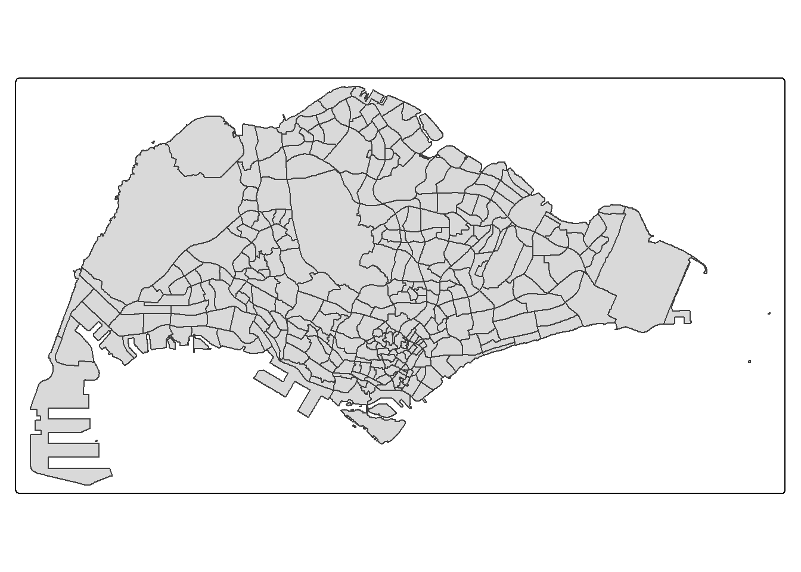
Resale price data
We will be using 4 room flats in our analysis. Below is the code chunk to filter leaving only the 4 room flats and the period from 1 January 2025 to 30 September 2025.
resale_2025_4rm <- resale %>%
filter(month >= "2025-01" & month <= "2025-09",
flat_type == "4 ROOM")geocode <- function(block, streetname) {
base_url <- "https://onemap.gov.sg/api/common/elastic/search"
address <- paste(block, streetname, sep = " ")
query <- list(
"searchVal" = address,
"returnGeom" = "Y",
"getAddrDetails" = "N",
"pageNum" = "1"
)
res <- GET(base_url, query = query)
restext <- content(res, as = "text")
output <- fromJSON(restext) %>%
as.data.frame() %>%
select(results.LATITUDE, results.LONGITUDE)
return(output)
}resale_2025_4rm$LATITUDE <- 0
resale_2025_4rm$LONGITUDE <- 0
for (i in 1:nrow(resale_2025_4rm)) {
temp_output <- geocode(resale_2025_4rm[i, "block"],
resale_2025_4rm[i, "street_name"])
resale_2025_4rm$LATITUDE[i] <- temp_output$results.LATITUDE[1]
resale_2025_4rm$LONGITUDE[i] <- temp_output$results.LONGITUDE[1]
}
write_rds(resale_2025_4rm, "data/rds/resale_4rm_geo.rds")resale_4rm_sf <- read_rds("data/rds/resale_4rm_geo.rds") %>%
st_as_sf(coords = c("LONGITUDE", "LATITUDE"), crs = 4326) %>%
st_transform(svy21)Primary school data
The code chunk below filters the schools dataset to include only primary schools which we will use in our analysis.
schools_primary <- schools %>%
filter(mainlevel_code == "PRIMARY")schools_primary$LATITUDE <- 0
schools_primary$LONGITUDE <- 0
for (i in 1:nrow(schools_primary)) {
temp_output <- geocode(schools_primary[i, "postal_code"], "")
schools_primary$LATITUDE[i] <- temp_output$results.LATITUDE[1]
schools_primary$LONGITUDE[i] <- temp_output$results.LONGITUDE[1]
}
write_rds(schools_primary, "data/rds/schools_primary_geo.rds")schools_primary_sf <- read_rds("data/rds/schools_primary_geo.rds") %>%
st_as_sf(coords = c("LONGITUDE", "LATITUDE"), crs = 4326) %>%
st_transform(svy21)Childcare centre data
The code chunk below filters the childcare centre dataset to include only centres that were last updated between January and September 2025.
childcare_2025 <- childcare %>%
mutate(last_updated = as.Date(last_updated, format = "%d/%m/%Y")) %>%
filter(
last_updated >= as.Date("2025-01-01"),
last_updated <= as.Date("2025-09-30")
)
childcare_2025$LATITUDE <- 0
childcare_2025$LONGITUDE <- 0
for (i in 1:nrow(childcare_2025)) {
temp_output <- geocode(childcare_2025[i, "postal_code"], "")
childcare_2025$LATITUDE[i] <- temp_output$results.LATITUDE[1]
childcare_2025$LONGITUDE[i] <- temp_output$results.LONGITUDE[1]
}
write_rds(childcare_2025, "data/rds/childcare_geo.rds")childcare_sf <- read_rds("data/rds/childcare_geo.rds") %>%
st_as_sf(coords = c("LONGITUDE", "LATITUDE"), crs = 4326) %>%
st_transform(svy21)MRT data
The Rapid Transit System dataset includes various railway-related geometries such as LRT features, depots and viaducts polygons. To extract only the actual MRT stations, we apply two filters:
TYP_CD_DES must be “MRT”
STN_NAM_DE must contain the word “STATION”
mrt <- mrt %>%
filter(
TYP_CD_DES == "MRT",
grepl("STATION", STN_NAM_DE, ignore.case = TRUE)
)Checking for z dimensions
Spatial objects may occasionally contain a Z-dimension (elevation values). Since our current require
2-dimensional geometries, it is important to ensure that all sf layers are stored as XY coordinates.
To streamline this process, we create two helper functions:
- check_z() - inspects whether an sf object contains a Z-dimension.
- drop_z_if_exists() - removes the Z-dimension only if it is present.
These functions help us efficiently verify and clean all spatial layers.
check_z <- function(sf_object) {
coords <- st_coordinates(sf_object)
if ("Z" %in% colnames(coords)) {
message("Z-dimension detected in: ", deparse(substitute(sf_object)))
} else {
message("No Z-dimension in: ", deparse(substitute(sf_object)))
}
return(head(coords))
}
drop_z_if_exists <- function(sf_object) {
coords <- st_coordinates(sf_object)
if ("Z" %in% colnames(coords)) {
message("Removing Z-dimension from: ", deparse(substitute(sf_object)))
return(st_zm(sf_object))
} else {
message("Already in 2D: ", deparse(substitute(sf_object)))
return(sf_object)
}
}check_z(resale_4rm_sf) X Y
[1,] 30036.29 38360.76
[2,] 29283.45 38517.37
[3,] 30036.29 38360.76
[4,] 28566.05 38861.93
[5,] 29283.45 38517.37
[6,] 28566.05 38861.93check_z(schools_primary_sf) X Y
[1,] 24296.63 47144.77
[2,] 27958.14 46096.26
[3,] 27966.81 38071.92
[4,] 27010.19 30414.72
[5,] 33992.45 41365.63
[6,] 28900.66 40683.26check_z(childcare_sf) X Y
[1,] 27375.19 45328.68
[2,] 27700.82 30962.88
[3,] 36131.94 31870.84
[4,] 31980.09 39607.05
[5,] 21652.54 45582.32
[6,] 20840.27 41058.15check_z(kindergartens) X Y
[1,] 30325.45 38859.25
[2,] 30190.51 39574.18
[3,] 30705.05 39337.90
[4,] 27354.73 45992.92
[5,] 27755.87 46300.26
[6,] 19307.62 40271.08check_z(parks) X Y
[1,] 28407.89 48792.87
[2,] 27574.29 48030.46
[3,] 26585.43 43057.58
[4,] 20360.00 39179.59
[5,] 20833.78 39263.51
[6,] 30105.32 41336.72check_z(mrt) X Y L1 L2 L3
[1,] 29293.51 31312.53 1 1 1
[2,] 29360.10 31290.71 1 1 1
[3,] 29361.85 31296.03 1 1 1
[4,] 29362.32 31295.87 1 1 1
[5,] 29363.91 31300.73 1 1 1
[6,] 29371.07 31306.66 1 1 1check_z(busstop) X Y
[1,] 35565.66 41659.52
[2,] 21439.91 31253.63
[3,] 31381.06 35313.49
[4,] 31152.55 31688.08
[5,] 20134.20 31917.38
[6,] 22723.57 33349.85check_z(malls) X Y
[1,] 22999.03 32257.72
[2,] 29817.23 31171.83
[3,] 29940.53 31287.08
[4,] 35780.64 31719.50
[5,] 31923.22 34848.97
[6,] 29431.32 30156.52check_z(supermarkets) X Y Z
[1,] 35561.22 42685.17 0
[2,] 32184.01 32947.46 0
[3,] 33903.48 39480.46 0
[4,] 37083.82 35017.47 0
[5,] 41320.30 37283.82 0
[6,] 41384.47 37152.14 0check_z(hawkers) X Y
[1,] 29480.26 29076.41
[2,] 24814.32 31095.01
[3,] 36371.37 44035.87
[4,] 25229.98 28415.04
[5,] 21657.83 35711.57
[6,] 21533.67 35883.11check_z(eldercare) X Y
[1,] 16614.08 36639.12
[2,] 38803.81 35098.78
[3,] 14481.92 36357.61
[4,] 31505.35 31853.52
[5,] 27218.35 30135.49
[6,] 27278.94 29350.17resale_4rm_sf <- drop_z_if_exists(resale_4rm_sf)
schools_primary_sf <- drop_z_if_exists(schools_primary_sf)
childcare_sf <- drop_z_if_exists(childcare_sf)
kindergartens <- drop_z_if_exists(kindergartens)
parks <- drop_z_if_exists(parks)
mrt <- drop_z_if_exists(mrt)
busstop <- drop_z_if_exists(busstop)
malls <- drop_z_if_exists(malls)
supermarkets <- drop_z_if_exists(supermarkets)
hawkers <- drop_z_if_exists(hawkers)
eldercare <- drop_z_if_exists(eldercare)All spatial datasets were examined for the presence of Z-coordinates. The results show that most layers are already stored in 2-dimensional XY format. For those with Z-values, the st_zm() function was applied to remove the extra dimension. This ensures that subsequent spatial operations are performed correctly without dimensional conflicts.
Important
The MRT station output includes extra columns named L1, L2, L3. These columns do not represent spatial coordinates. Instead, they are index identifiers that tell us which part of the geometry the coordinate belongs to.
L1 refers to the main ring or holes, L2 to the ring id in the MULTIPOLYGON, and L3 to the simple feature. Multipolygon
Handling multipolygons
To ensure a clean and consistent point layer for our analysis, we convert polygons into representative point features using st_point_on_surface().
mrt <- st_point_on_surface(mrt)Checking for overlapping data
Due to the nature of high-rise HDB housing, multiple transactions may originate from the same block and therefore share identical coordinates. When these overlapping points remain unresolved, certain spatial operations may encounter instability or numerical issues.
To ensure smooth modelling, we first detect overlapping points and subsequently apply a small jitter to separate them by up to 1 metre. This adjustment is spatially negligible but prevents computational conflicts in later stages.
overlapping_points <- resale_4rm_sf %>%
mutate(overlap = lengths(st_equals(., .)) > 1)set.seed(1234)
resale_4rm_sf <- resale_4rm_sf %>%
st_jitter(amount = 1)Mapping the layers
Before constructing explanatory variables, it is useful to visualise the spatial distribution of the HDB resale transactions and the key point-of-interest datasets. This allows us to confirm that the coordinates are correct and that all features align with the base map of Singapore.
tmap_mode("plot")
tm_shape(mpsz_main) +
tm_polygons(col = "white") +
tm_shape(resale_4rm_sf) +
tm_dots(size = 0.08)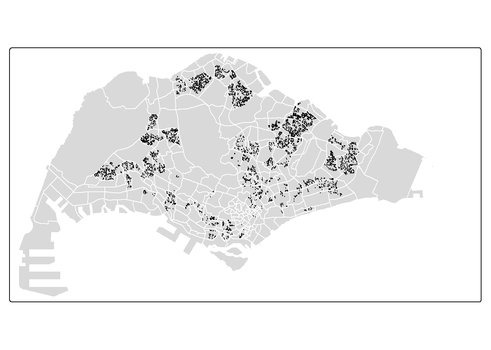
tmap_mode("plot")
tm_shape(mpsz_main) +
tm_polygons(col = "white") +
tm_shape(schools_primary_sf) +
tm_dots()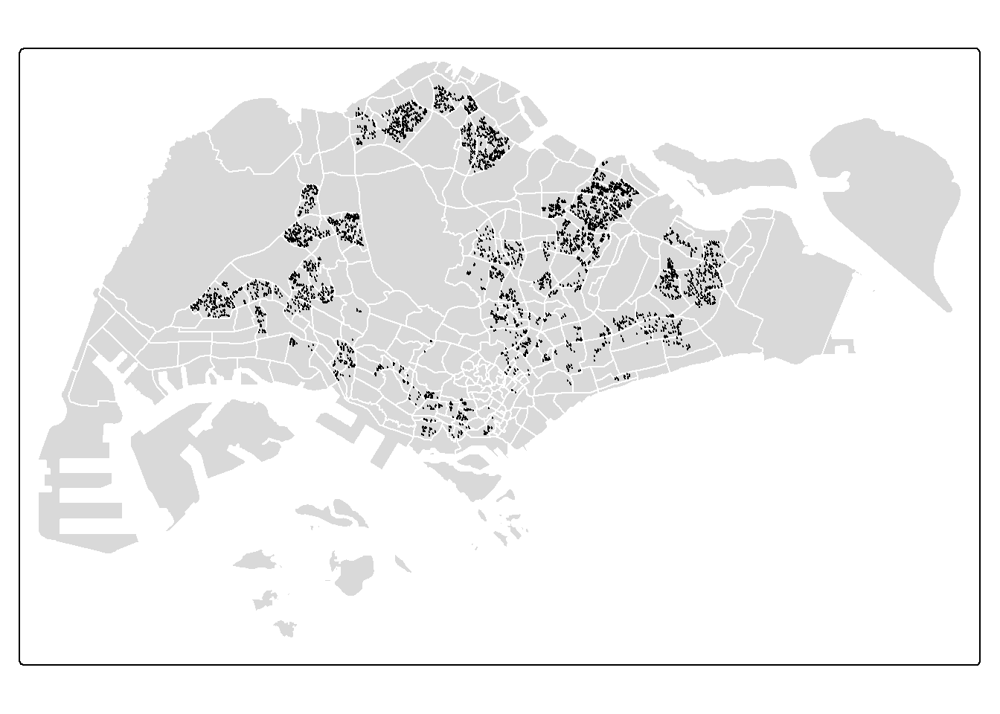
tm_shape(mpsz_main) +
tm_polygons(col = "white") +
tm_shape(childcare_sf) +
tm_dots()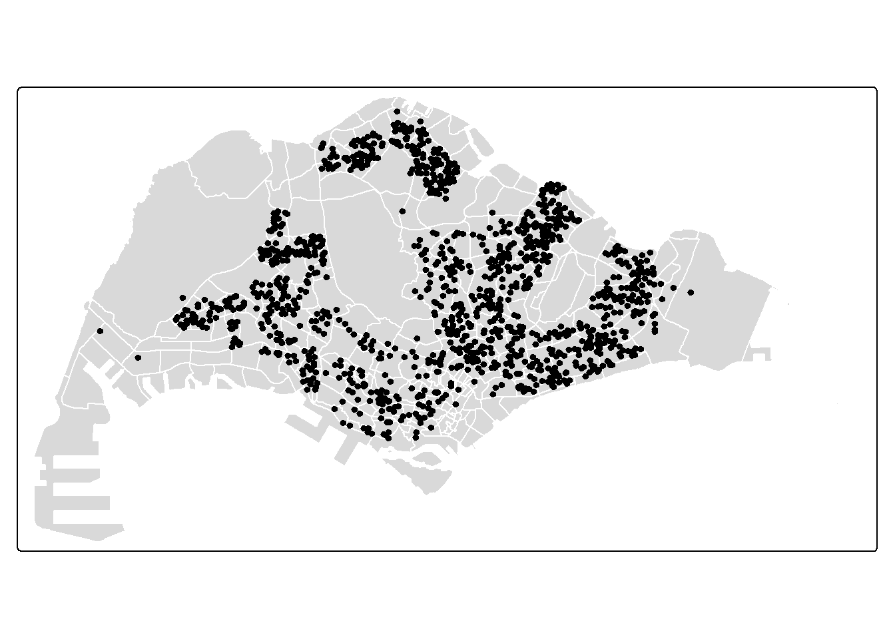
tm_shape(mpsz_main) +
tm_polygons(col = "white") +
tm_shape(kindergartens) +
tm_dots()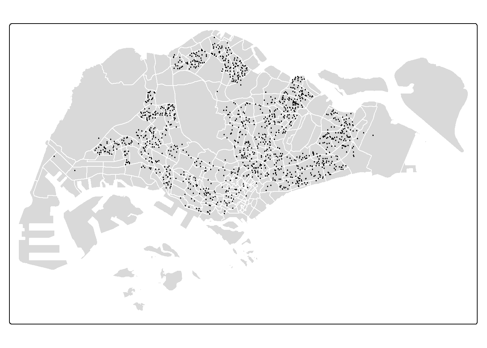
tm_shape(mpsz_main) +
tm_polygons(col = "white") +
tm_shape(parks) +
tm_dots()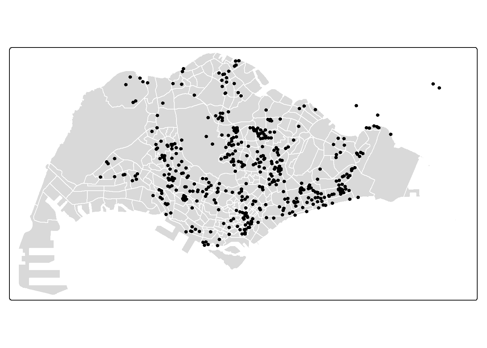
tm_shape(mpsz_main) +
tm_polygons(col = "white") +
tm_shape(mrt) +
tm_dots()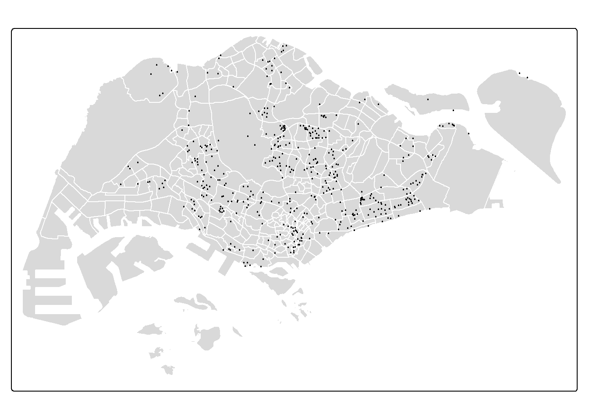
tm_shape(mpsz_main) +
tm_polygons(col = "white") +
tm_shape(busstop) +
tm_dots(size = 0.06)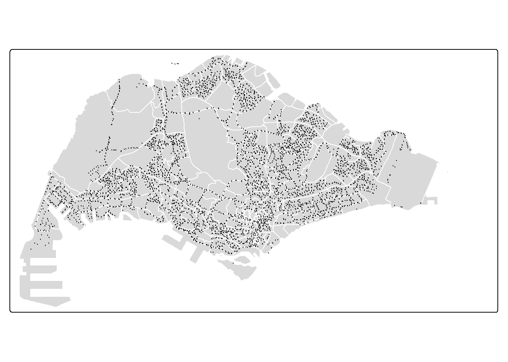
tm_shape(mpsz_main) +
tm_polygons(col = "white") +
tm_shape(malls) +
tm_dots()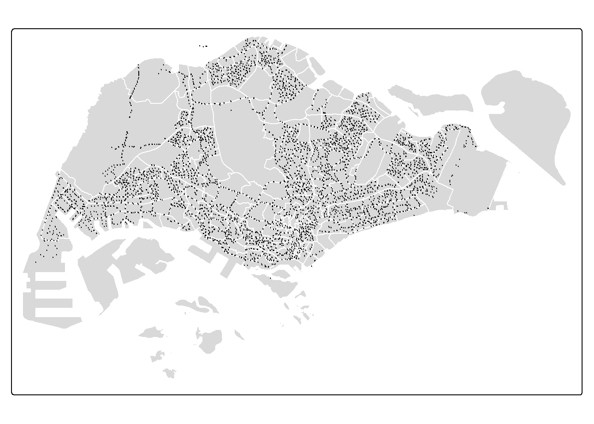
tm_shape(mpsz_main) +
tm_polygons(col = "white") +
tm_shape(supermarkets) +
tm_dots()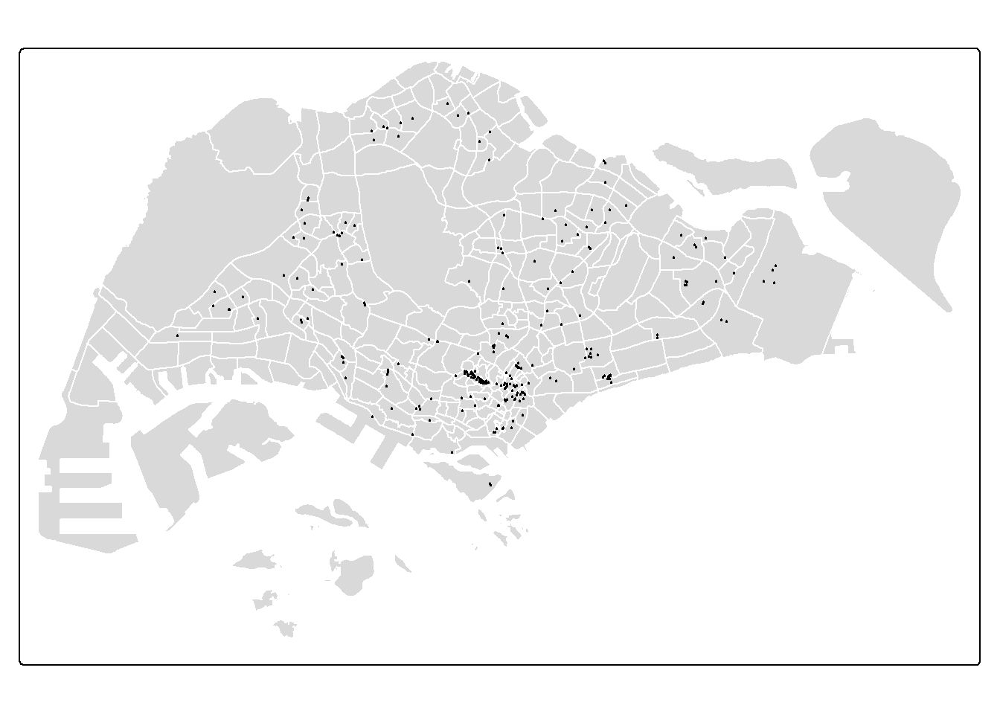
tm_shape(mpsz_main) +
tm_polygons(col = "white") +
tm_shape(hawkers) +
tm_dots()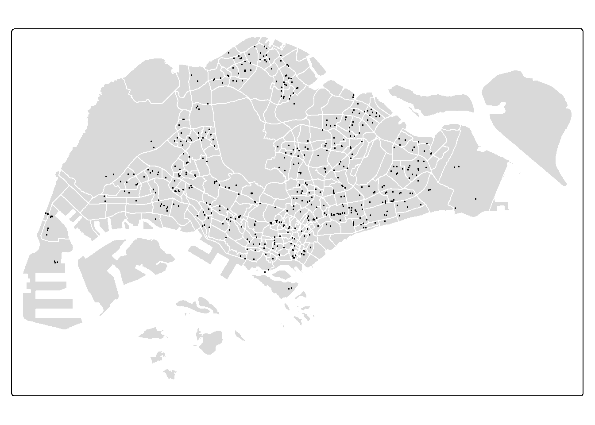
tm_shape(mpsz_main) +
tm_polygons(col = "white") +
tm_shape(eldercare) +
tm_dots()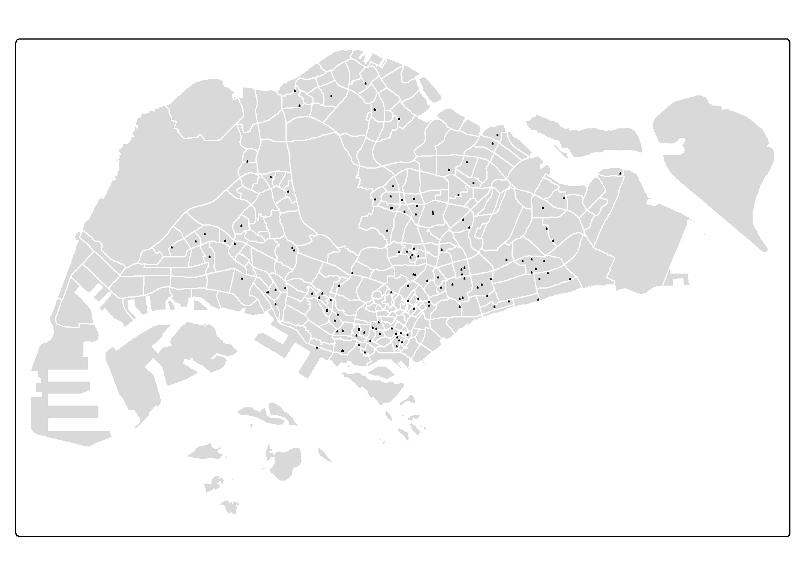
tm_shape(mpsz_main) +
tm_polygons(col = "white") +
tm_shape(resale_4rm_sf) +
tm_dots(col = "gold", size = 0.3, border.col = "gold")+
tm_shape(mrt) +
tm_dots(col = "red", size = 0.3, border.col = "red") +
tm_shape(schools_primary_sf) +
tm_dots(col = "darkgreen", size = 0.3, border.col = "darkgreen") +
tm_shape(childcare_sf) +
tm_dots(col = "purple", size = 0.3, border.col = "purple") +
tm_shape(kindergartens) +
tm_dots(col = "orange", size = 0.3, border.col = "orange") +
tm_shape(supermarkets) +
tm_dots(col = "blue", size = 0.3, border.col = "blue") +
tm_shape(hawkers) +
tm_dots(col = "black", size = 0.3, border.col = "black")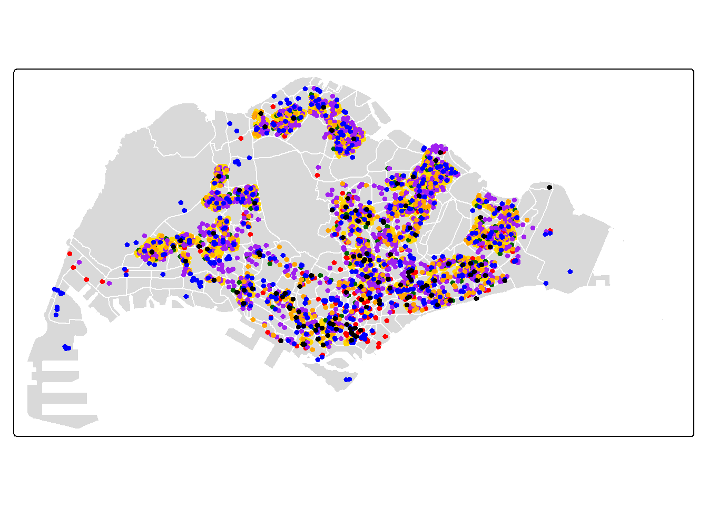
Data wrangling
Storey range conversion
Two key housing attributes, storey_range and remaining_lease, are supplied in textual formats that are not suitable for statistical modelling. To make these variables usable in our regression and geographically weighted regression models, they are transformed into continuous numeric measures.
The storey_range field is expressed as a range (for example, “01 TO 03”). For analysis, the range is split into its lower and upper bounds, and the midpoint of the range is computed to represent the typical floor level of the flat. This produces a single numeric variable (storey_mid) that is easy to interpret and can be used directly in regression models.
resale_4rm_sf <- resale_4rm_sf %>%
mutate(
storey_low = as.numeric(str_extract(storey_range, "^\\d+")),
storey_high = as.numeric(str_extract(storey_range, "(?<= TO )\\d+")),
storey_mid = (storey_low + storey_high) / 2
)Remaining lease conversion
The remaining_lease field is provided in a descriptive form such as “93 years 10 months”. The numeric components are extracted, and the years and months are combined into a single continuous measure expressed in years (remaining_lease_yrs). This allows the remaining lease to be incorporated as a quantitative predictor without losing information.
resale_4rm_sf <- resale_4rm_sf %>%
mutate(
lease_nums = str_extract_all(remaining_lease, "\\d+"),
lease_years = vapply(lease_nums, function(x) as.numeric(x[1]), numeric(1)),
lease_months = vapply(lease_nums, function(x) {
if (length(x) >= 2) as.numeric(x[2]) else 0
}, numeric(1)),
remaining_lease_yrs = lease_years + lease_months / 12
) %>%
select(-lease_nums, -lease_years, -lease_months)head(resale_4rm_sf)Simple feature collection with 6 features and 15 fields
Geometry type: POINT
Dimension: XY
Bounding box: xmin: 28565.07 ymin: 38361.01 xmax: 30037.01 ymax: 38862.02
Projected CRS: SVY21 / Singapore TM
month town flat_type block street_name storey_range
1 2025-01 ANG MO KIO 4 ROOM 337 ANG MO KIO AVE 1 13 TO 15
2 2025-01 ANG MO KIO 4 ROOM 310C ANG MO KIO AVE 1 10 TO 12
3 2025-01 ANG MO KIO 4 ROOM 337 ANG MO KIO AVE 1 10 TO 12
4 2025-02 ANG MO KIO 4 ROOM 226 ANG MO KIO AVE 1 07 TO 09
5 2025-02 ANG MO KIO 4 ROOM 310C ANG MO KIO AVE 1 28 TO 30
6 2025-02 ANG MO KIO 4 ROOM 226 ANG MO KIO AVE 1 04 TO 06
floor_area_sqm flat_model lease_commence_date remaining_lease
1 91 New Generation 1982 56 years 03 months
2 94 Model A 2012 86 years 09 months
3 91 New Generation 1982 56 years 02 months
4 91 New Generation 1978 52 years
5 96 Model A 2012 86 years 08 months
6 92 New Generation 1978 52 years
resale_price storey_low storey_high storey_mid remaining_lease_yrs
1 582000 13 15 14 56.25000
2 865000 10 12 11 86.75000
3 530000 10 12 11 56.16667
4 560000 7 9 8 52.00000
5 1038000 28 30 29 86.66667
6 542000 4 6 5 52.00000
geometry
1 POINT (30035.51 38361.01)
2 POINT (29283.67 38517.62)
3 POINT (30037.01 38361.04)
4 POINT (28565.07 38861.4)
5 POINT (29283.78 38517.4)
6 POINT (28566.44 38862.02)Transaction date conversion
The transaction month in the resale dataset is supplied in the format “YYYY-MM”, which is a character field rather than a true date object. To make the variable usable for trend analysis and later modelling, the string is converted into a proper date by appending the first day of the month and running it through as.Date(). From this, the transaction year and month are extracted as numeric fields. These derived variables allow us to capture possible temporal effects in the resale prices and ensure that the modelling dataset contains consistently formatted date information.
resale_4rm_sf <- resale_4rm_sf %>%
mutate(
sale_date = as.Date(paste0(month, "-01")),
sale_year = as.numeric(format(sale_date, "%Y")),
sale_month = as.numeric(format(sale_date, "%m"))
)Age of unit computation
After converting the transaction month into a proper date format, the next structural variable prepared is the age of the unit. Although the HDB resale dataset does not directly provide the age of each flat, it includes information on remaining lease. Since most HDB flats are sold under a 99-year lease, the age of the unit can be derived as Age of Unit = 99 – Remaining Lease.
resale_4rm_sf <- resale_4rm_sf %>%
mutate(
age_of_unit = 99 - remaining_lease_yrs
)Computing proximity measures
To study how accessibility influences resale flat prices, distance-based variables are created to capture the proximity of each flat to nearby amenities. The distance between every 4-room resale flat and each category of amenity is computed using st_distance(). For each amenity type, the minimum distance is taken to represent the nearest available facility. This yields a set of continuous explanatory variables such as distance to the nearest MRT station, childcare centre and kindergarten.
The below code chunk is a reusable function that will be used to calculate the proximity distance.
nearest_dist <- function(from_pts, to_pts) {
st_distance(from_pts, to_pts) %>%
apply(1, min) %>%
as.numeric()
}resale_4rm_sf <- resale_4rm_sf %>%
mutate(
dist_mrt = nearest_dist(., mrt),
dist_school_pri = nearest_dist(., schools_primary_sf),
dist_childcare = nearest_dist(., childcare_sf),
dist_kinder = nearest_dist(., kindergartens),
dist_mall = nearest_dist(., malls),
dist_busstop = nearest_dist(., busstop),
dist_eldercare = nearest_dist(., eldercare),
dist_hawker = nearest_dist(., hawkers),
dist_park = nearest_dist(., parks),
dist_supermarket = nearest_dist(., supermarkets)
)Computing neighbourhood counts within distance
Beyond measuring the nearest distance, accessibility is also captured through the number of amenities available within a reasonable walking radius. Such variables represent local opportunity density and are commonly used in hedonic pricing and spatial accessibility studies.
The below code chunk is a reusable function that will be used to calculate the number of amenities within a set distance.
count_within <- function(from_pts, to_pts, radius) {
hits_list <- st_is_within_distance(from_pts, to_pts, dist = radius)
sapply(hits_list, length)
}Each 4-room resale flat is buffered by a specified radius (350m/1km), and the number of surrounding amenities falling inside the buffer is counted. This produces variables such as the number of kindergartens within 350m, number of childcare centres within 350m, number of bus stops within 350m and number of primary schools within 1km. These neighbourhood measures are attached to the resale dataset as part of the data wrangling process to be used later.
resale_4rm_sf <- resale_4rm_sf %>%
mutate(
n_kinder_350m = count_within(., kindergartens, radius = 350),
n_childcare_350m = count_within(., childcare_sf, radius = 350),
n_busstop_350m = count_within(., busstop, radius = 350),
n_schoolpri_1km = count_within(., schools_primary_sf, radius = 1000)
)Exploratory Analysis
Before building the Geographically Weighted Regression (GWR) model, an exploratory analysis was conducted to understand the structure, distribution, and spatial patterns of the variables used in the study.
This step ensures that:
the predictors are meaningful and non-redundant
the relationships between variables are reasonable
the data contains spatial variation that justifies using GWR instead of a global model
potential issues such as multicollinearity, outliers, or skewness are identified early
The exploratory analysis focuses on the prepared 4-room resale HDB dataset (resale_4rm_sf) and its associated amenity proximity variables.
Distribution of Key Variables
Structural Factors
Structural factors describe the physical characteristics and intrinsic attributes of the HDB unit. These variables directly influence resale value because they affect the usable space, housing quality, lifespan and overall desirability of the flat.
p_area <- ggplot(resale_4rm_sf, aes(x = floor_area_sqm)) +
geom_histogram(bins = 40, fill = "steelblue", color = "white") +
labs(title = "Floor Area (sqm)", x = "Floor area (sqm)", y = "Count")
p_storey <- ggplot(resale_4rm_sf, aes(x = storey_range)) +
geom_bar(fill = "darkorange", color = "white") +
labs(title = "Floor Level (Storey Range)", x = "Storey range", y = "Count") +
theme(axis.text.x = element_text(angle = 45, hjust = 1))
p_lease <- ggplot(resale_4rm_sf, aes(x = remaining_lease_yrs)) +
geom_histogram(bins = 40, fill = "salmon", color = "white") +
labs(title = "Remaining Lease (Years)", x = "Remaining lease (years)", y = "Count")
p_age <- ggplot(resale_4rm_sf, aes(x = age_of_unit)) +
geom_histogram(bins = 40, fill = "seagreen", color = "white") +
labs(title = "Age of Unit (Years)", x = "Age of unit (years)", y = "Count")
ggarrange(p_area, p_storey, p_lease, p_age, ncol = 2, nrow = 2)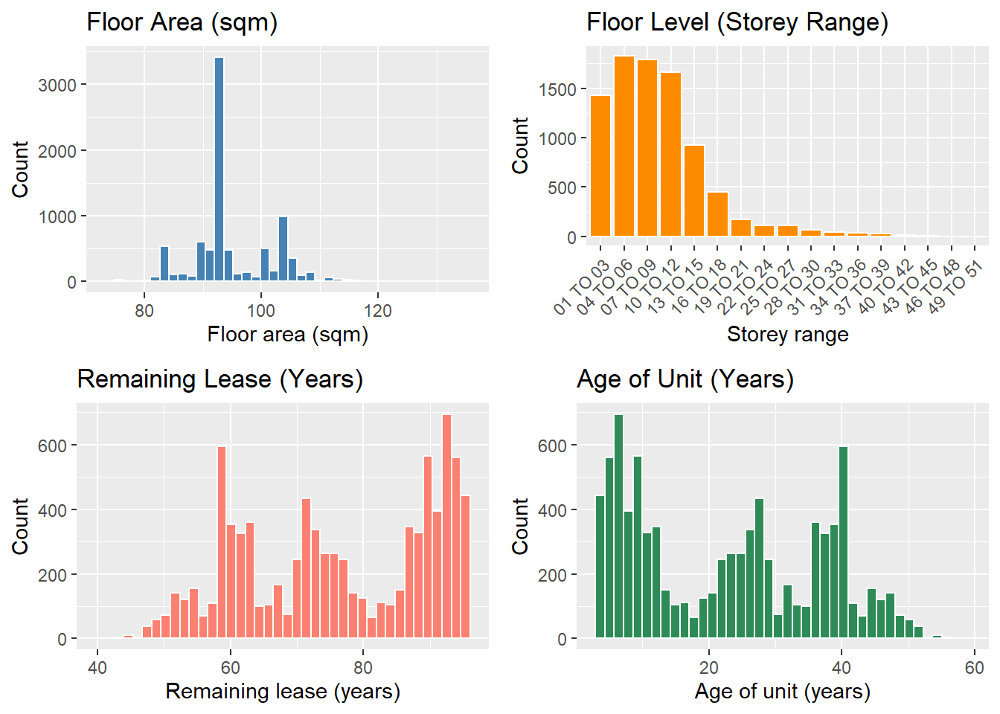
The distribution of floor area for 4-room flats is tightly centred around the 90–100 sqm range, with a strong peak at approximately 95 sqm. This reflects standardised HDB flat designs, where most 4-room layouts fall within a narrow band. A small number of larger units (110–120 sqm) and smaller units (<90 sqm) exist but occur infrequently.
Storey levels show a right-skewed distribution, with most flats located between the 1st and 15th storey. Mid-level floors (7th to 13th storey) dominate the dataset, consistent with Singapore’s typical HDB block height profile. Higher floors (above 25th storey) form only a small proportion of the sample.
Remaining lease exhibits a multi-modal distribution, reflecting clusters of older and newer estates. Many units have between 55–65 years of lease remaining, corresponding to older precincts built in the 1980s–1990s. A second concentration occurs around 80–90 years, representing newer flats launched after the mid-2000s.
Age distribution ranges from newly built flats (<10 years old) to mature blocks exceeding 40 years. This variation indicates that age is a strong structural factor, capturing depreciation, estate maturity and buyer expectations of older neighbourhoods.
Location factors
Distance Based
Distance-based variables capture how close each flat is to key amenities and activity centres. In this study, proximity is measured from every resale flat to the nearest MRT station, park, hawker centre/food court, shopping mall, supermarket and eldercare facility. Since all distances are computed using the SVY21 projected coordinate system, so the results are expressed in metres and are directly interpretable as walking or travel distance.
p_elder <- ggplot(resale_4rm_sf, aes(x = dist_eldercare)) +
geom_histogram(bins = 40, fill = "darkorange", color = "white") +
labs(title = "Distance to Eldercare", x = "Distance (m)", y = "Count") +
theme_minimal(base_size = 13)
p_hawker <- ggplot(resale_4rm_sf, aes(x = dist_hawker)) +
geom_histogram(bins = 40, fill = "firebrick", color = "white") +
labs(title = "Distance to Hawker Centre", x = "Distance (m)", y = "Count") +
theme_minimal(base_size = 13)
p_mrt <- ggplot(resale_4rm_sf, aes(x = dist_mrt)) +
geom_histogram(bins = 40, fill = "purple", color = "white") +
labs(title = "Distance to MRT", x = "Distance (m)", y = "Count") +
theme_minimal(base_size = 13)
p_park <- ggplot(resale_4rm_sf, aes(x = dist_park)) +
geom_histogram(bins = 40, fill = "forestgreen", color = "white") +
labs(title = "Distance to Park", x = "Distance (m)", y = "Count") +
theme_minimal(base_size = 13)
p_mall <- ggplot(resale_4rm_sf, aes(x = dist_mall)) +
geom_histogram(bins = 40, fill = "goldenrod", color = "white") +
labs(title = "Distance to Shopping Mall", x = "Distance (m)", y = "Count") +
theme_minimal(base_size = 13)
p_super <- ggplot(resale_4rm_sf, aes(x = dist_supermarket)) +
geom_histogram(bins = 40, fill = "turquoise4", color = "white") +
labs(title = "Distance to Supermarket", x = "Distance (m)", y = "Count") +
theme_minimal(base_size = 13)
ggarrange(p_elder, p_hawker, p_mrt, p_park, p_mall, p_super,
ncol = 2, nrow = 3
)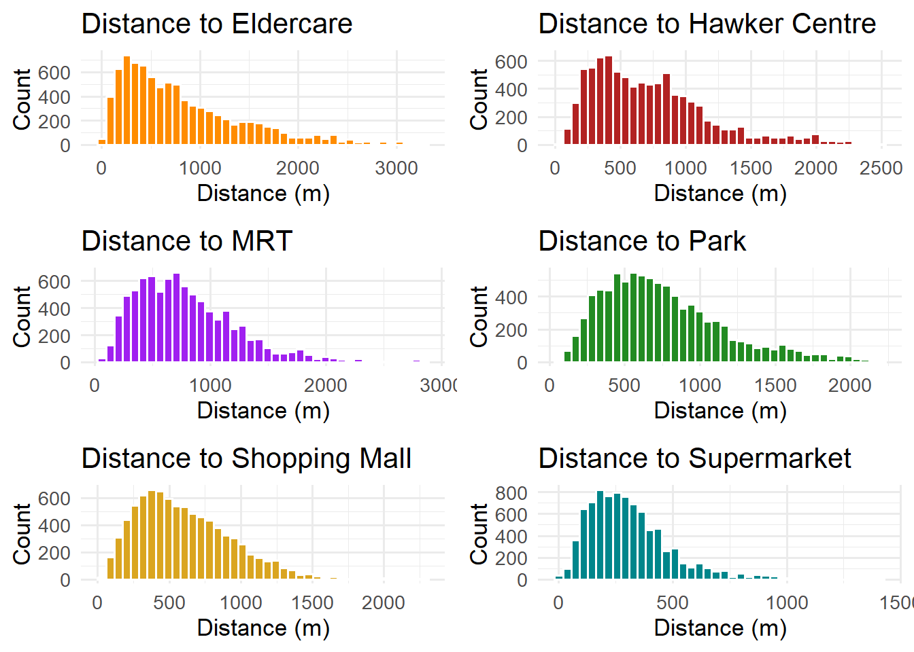
Eldercare distribution shows a clear right-skew, with a large concentration of units within 400-800m of an eldercare centre. This suggests that eldercare services are spatially well distributed across Singapore’s residential areas. Only a small proportion of units lie more than 2 km away.
Distances to hawker centres cluster tightly around 300-800m, with long tails beyond 1.5 km. This indicates that most households can access food options within a short walk, while only a minority are located relatively far from these amenities.
MRT proximity shows a strong mode around 400-700m, gradually tapering toward 2km. Relatively few flats have extremely close MRT access (<200m), while some peripheral or older estates remain further away.
Distance to parks exhibits wider spread, mostly within 400-1200m, reflecting the mix of small neighbourhood parks and larger regional parks.
Most units are within 400-900m of a mall, with a decreasing tail extending toward 2 km and beyond.
Supermarkets show the shortest distances overall, with a heavy concentration around 200-500m. Only a small number of units fall beyond 1km from a supermarket.
Across all amenities, the distributions confirm Singapore’s compact urban layout, where key facilities are commonly reachable within 5-10min of walking.
Count Based
The distributions of these count variables reveal how richly served different neighbourhoods are. Flats in mature or highly developed estates tend to have more childcare centres, kindergartens and bus stops within 350 m, and more primary schools within 1 km, whereas units in newer or less dense areas often have fewer nearby facilities.
p_kinder <- ggplot(resale_4rm_sf, aes(n_kinder_350m)) +
geom_histogram(binwidth = 1, fill = "#FFA500", color = "white") +
labs(title = "Kindergartens Within 350m", x = "Count", y = "Frequency")
p_childcare <- ggplot(resale_4rm_sf, aes(n_childcare_350m)) +
geom_histogram(binwidth = 1, fill = "#FF6F61", color = "white") +
labs(title = "Childcare Centres Within 350m", x = "Count", y = "Frequency")
p_busstops <- ggplot(resale_4rm_sf, aes(n_busstop_350m)) +
geom_histogram(binwidth = 1, fill = "#1E90FF", color = "white") +
labs(title = "Bus Stops Within 350m", x = "Count", y = "Frequency")
p_schoolpri <- ggplot(resale_4rm_sf, aes(n_schoolpri_1km)) +
geom_histogram(binwidth = 1, fill = "#32CD32", color = "white") +
labs(title = "Primary Schools Within 1km", x = "Count", y = "Frequency")
ggarrange(p_kinder, p_childcare, p_busstops, p_schoolpri,ncol = 2, nrow = 2)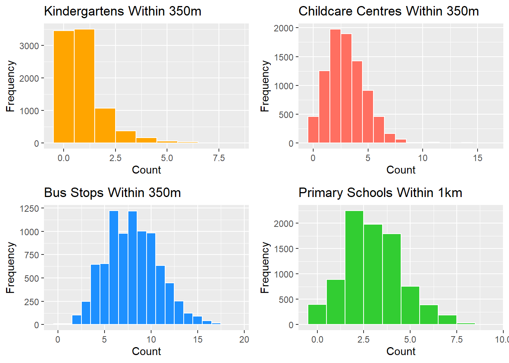
Kindergartens within 350m is strongly right-skewed, with most flats having 0 to 3 kindergartens nearby. Only a small portion of units have very high counts (5 or more), reflecting concentrated early-childhood education clusters in certain estates.
Childcare centres show a similar pattern, with most flats having 1 to 4 centres within short walking distance. A long right tail indicates highly service-rich neighbourhoods.
Bus stop counts are the highest among all categories, commonly ranging from 2 to 6 bus stops within 350m. This is expected due to the dense bus network. The spread also reflects flats located near bus interchanges or multiple bus corridors.
Most flats fall within 0 to 3 primary schools within 1km, with some areas near schooling clusters reaching higher values.
Correlation Matrix
The correlation matrix provides an initial view of how the structural and locational variables relate to each other and to the resale prices. This step is part of exploratory data analysis and helps identify broad relationships before moving to more detailed modelling.
vars_struct_loc <- c(
"resale_price",
"floor_area_sqm",
"age_of_unit",
"remaining_lease_yrs",
"n_schoolpri_1km",
"n_kinder_350m",
"n_childcare_350m",
"n_busstop_350m",
"dist_mrt",
"dist_mall",
"dist_supermarket",
"dist_hawker",
"dist_park",
"dist_eldercare"
)
cor_mat <- resale_4rm_sf %>%
st_drop_geometry() %>%
select(all_of(vars_struct_loc)) %>%
cor(use = "pairwise.complete.obs")ggcorrplot(
cor_mat,
type = "lower",
lab = FALSE,
outline.col = "white",
hc.order = FALSE
) +
scale_fill_gradient2(
limits = c(-1, 1),
breaks = seq(-1, 1, 0.5),
name = "Pearson r"
) +
labs(
title = "Correlation Matrix of Structural and Locational Variables",
x = NULL, y = NULL
) +
theme_minimal(base_size = 11) +
theme(
plot.title = element_text(hjust = 0.5, face = "bold"),
axis.text.x = element_text(angle = 45, hjust = 1),
panel.grid = element_blank()
)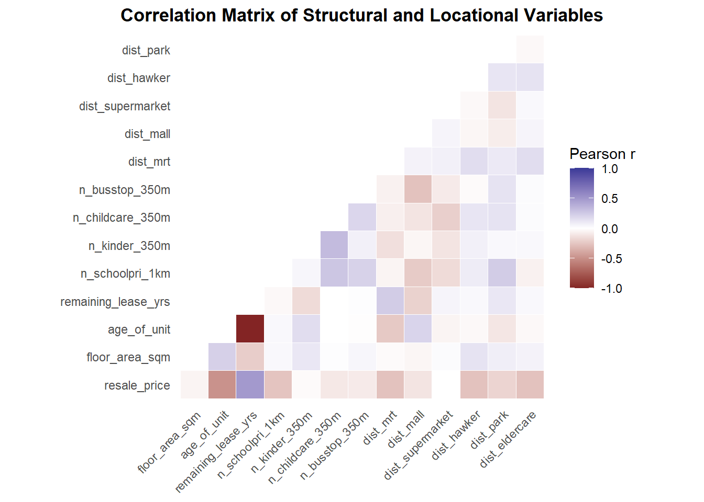
The correlation matrix shows that most structural and locational variables exhibit only weak relationships with one another, indicating that these factors tend to vary independently across 4-room HDB resale flats. As expected, the strongest relationship is between age of unit and remaining lease years, which display a strong negative correlation because older flats naturally have fewer years left on their lease. Apart from this, structural characteristics such as resale price and floor area show minimal association with locational attributes, suggesting that price and size differences are not strongly driven by proximity to amenities within this flat type.
Among the locational variables, amenity counts show mild positive correlations with one another. This reflects the clustering of child-centric facilities in denser residential areas. In contrast, the distance-based variables show very weak correlations with both structural features and amenity counts, indicating that accessibility to larger amenities like MRT stations, malls, supermarkets, hawker centres, parks or eldercare facilities is relatively uncorrelated with flat-level characteristics.
Overall, the weak correlations suggest that no single factor dominates on its own and prices are better understood using a multivariate model rather than simple pairwise relationships.
Hedonic Pricing Model
A global hedonic pricing model was constructed to examine the relationship between resale flat prices and a set of structural and locational attributes. Structural predictors include floor area and remaining lease years, while locational attributes capture the availability and accessibility of key amenities. The global model provides the baseline effects of each variable across the study area and serves as the starting point for spatial diagnostics and subsequent GWR analysis.
Linear Regression
The following code chunk will be used to create our model.
vars_final <- c(
"resale_price",
"floor_area_sqm",
"remaining_lease_yrs",
"n_schoolpri_1km",
"n_kinder_350m",
"n_childcare_350m",
"n_busstop_350m",
"dist_mrt",
"dist_mall",
"dist_supermarket",
"dist_hawker",
"dist_park",
"dist_eldercare"
)
resale_4rm_model <- resale_4rm_sf %>%
st_drop_geometry() %>%
select(all_of(vars_final))hpm.lm <- lm(
resale_price ~ .,
data = resale_4rm_model
)
summary(hpm.lm)
Call:
lm(formula = resale_price ~ ., data = resale_4rm_model)
Residuals:
Min 1Q Median 3Q Max
-311147 -66682 -8423 54728 545115
Coefficients:
Estimate Std. Error t value Pr(>|t|)
(Intercept) 205381.416 19265.773 10.660 < 2e-16 ***
floor_area_sqm 3098.077 168.878 18.345 < 2e-16 ***
remaining_lease_yrs 7116.334 84.966 83.755 < 2e-16 ***
n_schoolpri_1km -21507.847 759.298 -28.326 < 2e-16 ***
n_kinder_350m 9334.631 1099.485 8.490 < 2e-16 ***
n_childcare_350m -4088.656 666.631 -6.133 8.98e-10 ***
n_busstop_350m -3679.995 408.139 -9.017 < 2e-16 ***
dist_mrt -120.979 2.604 -46.455 < 2e-16 ***
dist_mall -19.558 3.485 -5.612 2.06e-08 ***
dist_supermarket -56.326 6.235 -9.033 < 2e-16 ***
dist_hawker -65.739 2.469 -26.621 < 2e-16 ***
dist_park -66.264 2.857 -23.191 < 2e-16 ***
dist_eldercare -59.239 1.757 -33.718 < 2e-16 ***
---
Signif. codes: 0 '***' 0.001 '**' 0.01 '*' 0.05 '.' 0.1 ' ' 1
Residual standard error: 100900 on 8666 degrees of freedom
Multiple R-squared: 0.6058, Adjusted R-squared: 0.6052
F-statistic: 1110 on 12 and 8666 DF, p-value: < 2.2e-16The model explains approximately 60% of the variation in 4-room resale flat prices, indicating that the structural and locational variables included in the model capture a substantial portion of price determinants. Among the structural attributes, floor area and remaining lease years exhibit strong and positive influences on resale price, reflecting buyers’ preference for larger units and longer lease durations.
Locational factors also play an important role. Proximity to key amenities is consistently associated with higher resale prices, as indicated by the negative coefficients for all distance variables. Prices decrease as distance to these amenities increases. The amenity count variables reveal a more nuanced pattern. A higher number of kindergartens within walking distance is associated with higher prices, suggesting added value from child-friendly environments.
However, greater densities of childcare centres, bus stops, or primary schools tend to correlate with lower resale prices, which may reflect neighbourhood characteristics such as older built-up areas, higher traffic intensity, or greater congestion.
Overall, the global model provides a clear understanding of the average relationships between housing attributes and resale prices across the study area. However, because these effects may vary spatially, the global model serves as a baseline for subsequent spatial diagnostics and geographically weighted regression to examine local variations in these relationships.
Moran’s I
We extract the residuals from the global hedonic pricing model hpm.lm. These residuals represent the portion of resale price variation not explained by the structural and locational predictors. In spatial analysis, examining residuals is essential because spatial clustering in the unexplained component may indicate that the our model has missed important spatial processes.
hpm.resid <- residuals(hpm.lm)A spatial weights matrix is constructed to define the neighbourhood structure among resale flats. A 6-nearest-neighbour scheme is used, ensuring that each observation has a consistent number of spatial neighbours.
coords <- st_coordinates(resale_4rm_sf)
knn6 <- knearneigh(coords, k = 6)
nb6 <- knn2nb(knn6)
lw6 <- nb2listw(nb6, style = "W")The Moran’s I test is performed on the OLS residuals using the spatial weights matrix created earlier. This test assesses whether the residuals are spatially clustered or randomly distributed. A significant Moran’s I statistic would indicate positive spatial autocorrelation, suggesting that the global OLS model does not adequately capture spatial dependence or spatially varying relationships. This diagnostic provides the justification for advancing to local modelling techniques such as Geographically Weighted Regression (GWR).
hpm.moran <- moran.test(hpm.resid, lw6)
hpm.moran
Moran I test under randomisation
data: hpm.resid
weights: lw6
Moran I statistic standard deviate = 144.57, p-value < 2.2e-16
alternative hypothesis: greater
sample estimates:
Moran I statistic Expectation Variance
8.409268e-01 -1.152339e-04 3.384352e-05 The Moran’s I test reveals strong and highly significant spatial autocorrelation in the residuals of the global hedonic price model. The Moran’s I statistic is 0.839, which is extremely high for residuals, and the associated p-value is < 2.2e-16, indicating that the observed clustering is far greater than would be expected under spatial randomness. This result shows that our model does not fully account for spatial patterns in resale prices and that important spatial processes remain in the unexplained component of the model.
The presence of strong positive spatial autocorrelation means that nearby flats tend to have similar residual values. This violates the OLS assumption of independent errors and signals that the relationships between price and the explanatory variables are spatially non-stationary.
Geographically Weighted Regression
Bandwidth Selection
The optimal bandwidth for the GWR model is identified using the AICc-based adaptive bandwidth selection procedure provided by bw.gwr(). An adaptive bisquare kernel is employed to ensure that each local regression calibrates using a consistent number of neighbouring observations, which is suitable given the uneven spatial distribution of resale flats across Singapore. The bandwidth parameter determines the spatial extent over which local relationships are estimated, and selecting it through AICc minimises model complexity while maximising explanatory power. This step establishes the spatial scale at which the relationships between resale price and its predictors vary across the study area.
gwr.bw <- bw.gwr(
formula = resale_price ~ floor_area_sqm +
remaining_lease_yrs +
n_schoolpri_1km +
n_kinder_350m +
n_childcare_350m +
n_busstop_350m +
dist_mrt +
dist_mall +
dist_supermarket +
dist_hawker +
dist_park +
dist_eldercare,
data = resale_4rm_sf,
approach = "AICc",
kernel = "bisquare",
adaptive = TRUE,
longlat = FALSE
)
gwr.bwwrite_rds(gwr.bw, "data/rds/gwr_bw.rds")gwr.bw <- readRDS("data/rds/gwr_bw.rds")Constructing the adaptive bandwidth gwr model
Based on the optimal adaptive bandwidth identified, the GWR model will then be calibrated using this bandwidth. The same set of structural and locational predictors from the linear regression model was included so that the results remain directly comparable.
hpm.gwr <- gwr.basic(
formula = resale_price ~ floor_area_sqm +
remaining_lease_yrs +
n_schoolpri_1km +
n_kinder_350m +
n_childcare_350m +
n_busstop_350m +
dist_mrt +
dist_mall +
dist_supermarket +
dist_hawker +
dist_park +
dist_eldercare,
data = resale_4rm_sf,
bw = gwr.bw,
kernel = "bisquare",
adaptive = TRUE,
longlat = FALSE
)
hpm.gwr ***********************************************************************
* Package GWmodel *
***********************************************************************
Program starts at: 2025-11-16 12:55:06.594821
Call:
gwr.basic(formula = resale_price ~ floor_area_sqm + remaining_lease_yrs +
n_schoolpri_1km + n_kinder_350m + n_childcare_350m + n_busstop_350m +
dist_mrt + dist_mall + dist_supermarket + dist_hawker + dist_park +
dist_eldercare, data = resale_4rm_sf, bw = gwr.bw, kernel = "bisquare",
adaptive = TRUE, longlat = FALSE)
Dependent (y) variable: resale_price
Independent variables: floor_area_sqm remaining_lease_yrs n_schoolpri_1km n_kinder_350m n_childcare_350m n_busstop_350m dist_mrt dist_mall dist_supermarket dist_hawker dist_park dist_eldercare
Number of data points: 8679
***********************************************************************
* Results of Global Regression *
***********************************************************************
Call:
lm(formula = formula, data = data)
Residuals:
Min 1Q Median 3Q Max
-311147 -66682 -8423 54728 545115
Coefficients:
Estimate Std. Error t value Pr(>|t|)
(Intercept) 205381.416 19265.773 10.660 < 2e-16 ***
floor_area_sqm 3098.077 168.878 18.345 < 2e-16 ***
remaining_lease_yrs 7116.334 84.966 83.755 < 2e-16 ***
n_schoolpri_1km -21507.847 759.298 -28.326 < 2e-16 ***
n_kinder_350m 9334.631 1099.485 8.490 < 2e-16 ***
n_childcare_350m -4088.656 666.631 -6.133 8.98e-10 ***
n_busstop_350m -3679.995 408.139 -9.017 < 2e-16 ***
dist_mrt -120.979 2.604 -46.455 < 2e-16 ***
dist_mall -19.558 3.485 -5.612 2.06e-08 ***
dist_supermarket -56.326 6.235 -9.033 < 2e-16 ***
dist_hawker -65.739 2.469 -26.621 < 2e-16 ***
dist_park -66.264 2.857 -23.191 < 2e-16 ***
dist_eldercare -59.239 1.757 -33.718 < 2e-16 ***
---Significance stars
Signif. codes: 0 '***' 0.001 '**' 0.01 '*' 0.05 '.' 0.1 ' ' 1
Residual standard error: 100900 on 8666 degrees of freedom
Multiple R-squared: 0.6058
Adjusted R-squared: 0.6052
F-statistic: 1110 on 12 and 8666 DF, p-value: < 2.2e-16
***Extra Diagnostic information
Residual sum of squares: 8.82571e+13
Sigma(hat): 100853.3
AIC: 224644.8
AICc: 224644.8
BIC: 216191.7
***********************************************************************
* Results of Geographically Weighted Regression *
***********************************************************************
*********************Model calibration information*********************
Kernel function: bisquare
Adaptive bandwidth: 222 (number of nearest neighbours)
Regression points: the same locations as observations are used.
Distance metric: Euclidean distance metric is used.
****************Summary of GWR coefficient estimates:******************
Min. 1st Qu. Median 3rd Qu.
Intercept -5.6105e+06 -2.5007e+05 -5.2452e+04 8.5774e+04
floor_area_sqm -2.3568e+04 2.4243e+03 3.4364e+03 4.9497e+03
remaining_lease_yrs -1.7764e+04 4.2385e+03 5.6529e+03 8.9256e+03
n_schoolpri_1km -5.3377e+04 -5.5008e+03 -1.7406e+02 6.5331e+03
n_kinder_350m -5.9812e+04 -1.0515e+04 -2.7658e+03 2.2253e+03
n_childcare_350m -4.4270e+04 -1.7507e+03 1.4479e+03 5.5594e+03
n_busstop_350m -1.1457e+04 -2.2829e+03 2.2346e+01 2.1729e+03
dist_mrt -2.8578e+03 -1.3579e+02 -7.0716e+01 -2.5599e+01
dist_mall -7.0433e+02 -5.6932e+01 -1.2022e+01 3.6864e+01
dist_supermarket -3.5781e+02 -5.0017e+01 -1.3404e+01 4.3539e+01
dist_hawker -8.5961e+02 -5.4262e+01 -8.5862e+00 4.6730e+01
dist_park -5.4720e+02 -5.7102e+01 -9.3095e+00 3.0125e+01
dist_eldercare -4.5949e+02 -2.5123e+01 5.8990e+00 5.2192e+01
Max.
Intercept 2892576.38
floor_area_sqm 20686.85
remaining_lease_yrs 20431.05
n_schoolpri_1km 49267.57
n_kinder_350m 85677.03
n_childcare_350m 30385.41
n_busstop_350m 17530.27
dist_mrt 886.96
dist_mall 2560.13
dist_supermarket 283.81
dist_hawker 942.78
dist_park 386.89
dist_eldercare 1192.89
************************Diagnostic information*************************
Number of data points: 8679
Effective number of parameters (2trace(S) - trace(S'S)): 1042.693
Effective degrees of freedom (n-2trace(S) + trace(S'S)): 7636.307
AICc (GWR book, Fotheringham, et al. 2002, p. 61, eq 2.33): 209049.8
AIC (GWR book, Fotheringham, et al. 2002,GWR p. 96, eq. 4.22): 207984.9
BIC (GWR book, Fotheringham, et al. 2002,GWR p. 61, eq. 2.34): 206316.3
Residual sum of squares: 1.174953e+13
R-square value: 0.9475162
Adjusted R-square value: 0.9403489
***********************************************************************
Program stops at: 2025-11-16 12:55:29.737763 The GWR model provides a much better fit than the linear regression model, showing that the factors influencing resale prices vary across different parts of Singapore. The adjusted R² increases from about 0.61 in the linear regression model to 0.94 in the GWR model, and the AICc drops sharply from 224,643 to 209,041 which indicates a significantly improved model. The large reduction in residual errors also shows that GWR captures local pricing patterns far more accurately.
The wide range of GWR coefficient values suggests that the impact of each variable changes depending on the location. For example, floor area and remaining lease have much stronger positive effects in some neighbourhoods, while the influence of nearby amenities varies according to local demand and estate characteristics.
Overall, the GWR results confirm that the housing market is not uniform across Singapore. Different neighbourhoods value attributes differently, and allowing the model to vary locally provides a much clearer picture of how prices are shaped across space.
Note
The linear regression model was used as the baseline regression. Moran’s I was then applied to the residuals to check for spatial autocorrelation. The significant Moran’s I result indicated that the base linear regression model does not fully capture spatial patterns, providing justification for applying our GWR.
Visualizing our outputs
Converting SDF into sf data.frame
To visualise the fields in SDF, we need to first covert it into sf data.frame by using the code chunk below.
resale_4rm_sf <- st_as_sf(hpm.gwr$SDF)tm_shape(mpsz_main) +
tm_polygons(
fill = "grey95",
col = "grey70",
lwd = 0.5
) +
tm_shape(resale_4rm_sf) +
tm_dots(
fill = "Local_R2",
fill.scale = tm_scale_intervals(
style = "quantile",
n = 5,
values = "viridis"
),
size = 0.1
) +
tm_title("Local R² of GWR Model")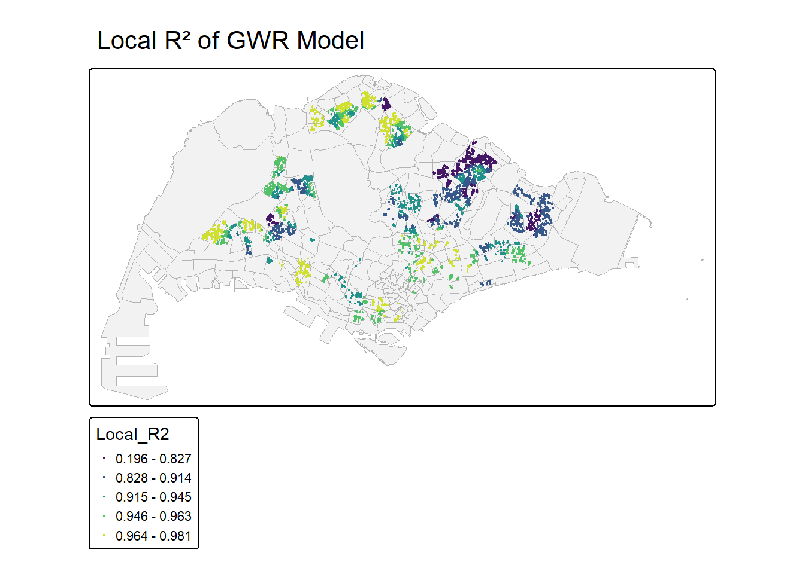
Overall, the model performs very strongly with pockets of weaker fit. Most regions exhibit Local R² values above 0.90, indicating that spatially varying relationships between attributes such as floor area, lease balance, proximities to amenities, and transit coverage explain resale prices effectively.
tm_shape(mpsz_main) +
tm_polygons(
fill = "grey95",
col = "grey70",
lwd = 0.5
) +
tm_shape(resale_4rm_sf) +
tm_dots(
fill = "floor_area_sqm",
fill.scale = tm_scale_intervals(
style = "quantile",
n = 5,
values = "-RdBu" # blue = lower / more negative, red = higher / more positive
),
size = 0.1
) +
tm_title("Local Effect of Floor Area (sqm)")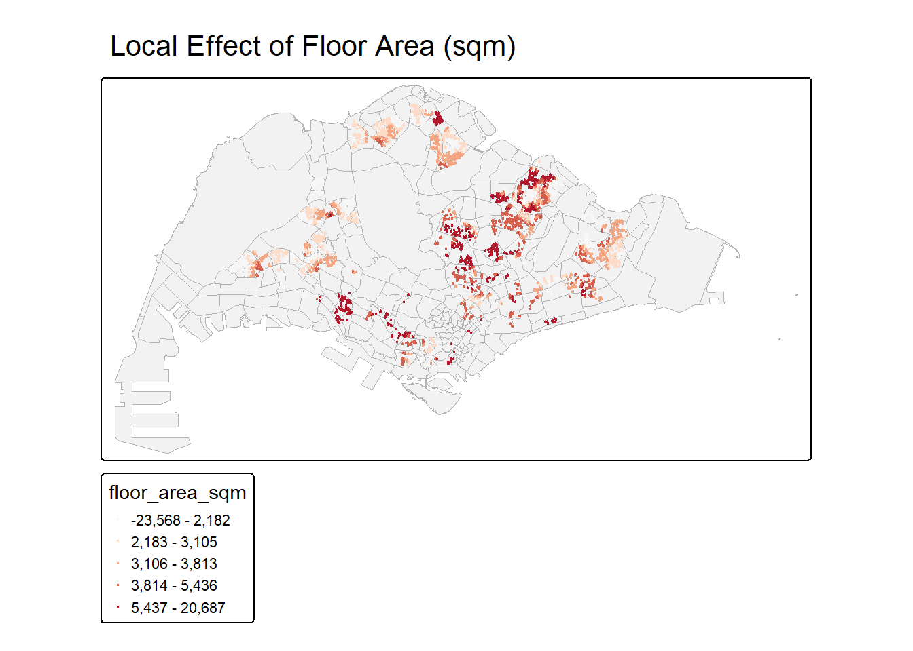
The GWR results show that the impact of floor area on resale prices varies noticeably across Singapore. While the effect is positive almost everywhere, its intensity differs by location. Stronger effects appear in the central and mature estates where larger units command a premium which is shown by the deeper red clusters. In contrast, some northern and fringe regions show weaker or even slightly negative coefficients, possibly reflecting local supply conditions or differing buyer preferences.
tm_shape(mpsz_main) +
tm_polygons(
fill = "grey95",
col = "grey70",
lwd = 0.5
) +
tm_shape(resale_4rm_sf) +
tm_dots(
fill = "remaining_lease_yrs",
fill.scale = tm_scale_intervals(
style = "quantile",
n = 5,
values = "-RdBu"
),
size = 0.1
) +
tm_title("Local Effect of Remaining Lease (Years)")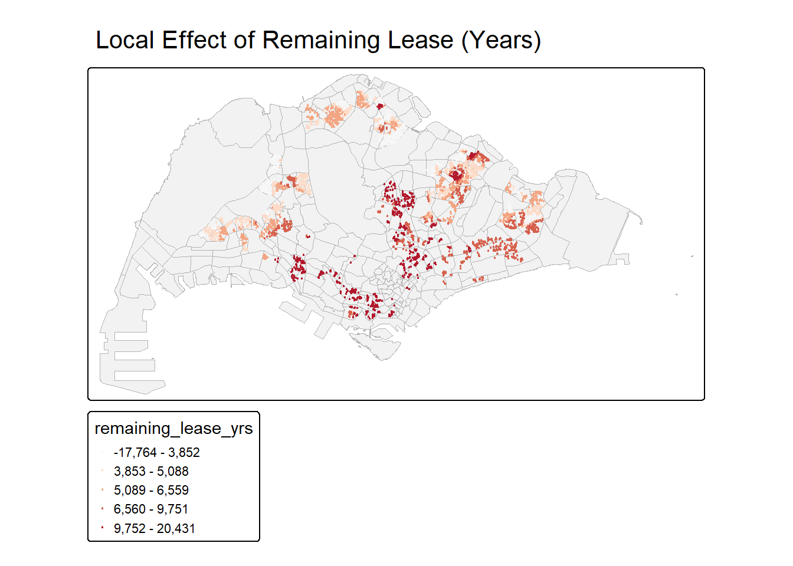
Remaining lease consistently shows a positive local effect, but the magnitude varies across towns. Central and eastern estates display the strongest sensitivity, where each additional lease year contributes more to resale value. In contrast, northern and western clusters show milder effects, suggesting buyers there may be less price-sensitive to lease decay.
tm_shape(mpsz_main) +
tm_polygons(
fill = "grey95",
col = "grey70",
lwd = 0.5
) +
tm_shape(resale_4rm_sf) +
tm_dots(
fill = "dist_mrt",
fill.scale = tm_scale_intervals(
style = "quantile",
n = 5,
values = "-RdBu"
),
size = 0.1
) +
tm_title("Local Effect of Distance to MRT")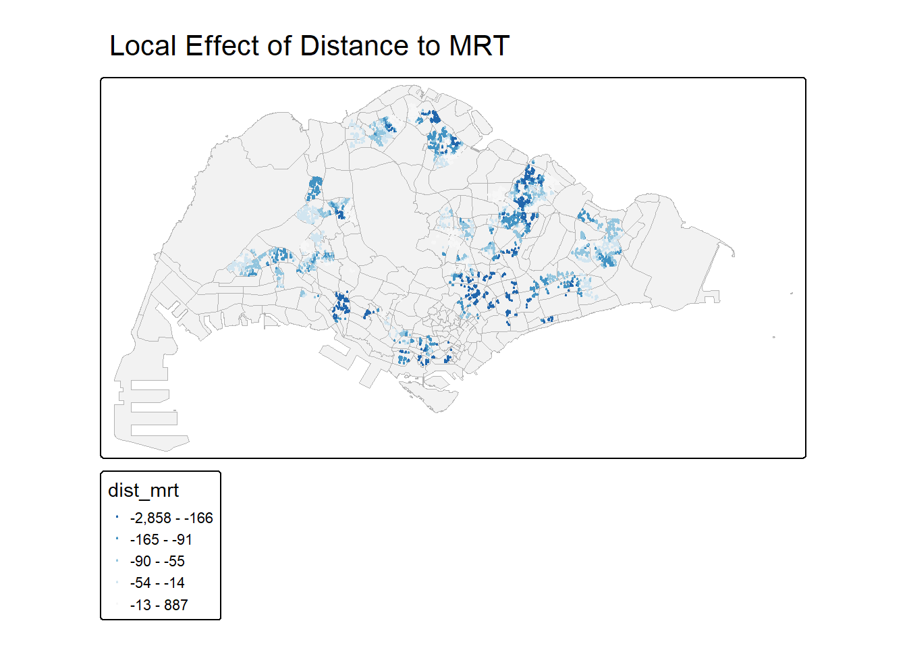
The coefficient surface for distance to MRT reveals a clear negative relationship across most regions, but again with spatial differences. Stronger negative effects (darker blue areas) are found in the northeast, southeast and central regions which indicates areas where MRT accessibility is a highly valued amenity. Overall, the map shows that proximity to MRT is important.
tm_shape(mpsz_main) +
tm_polygons(fill = "grey95", col = "grey70", lwd = 0.5) +
tm_shape(resale_4rm_sf) +
tm_dots(
fill = "dist_mall",
fill.scale = tm_scale_intervals(
style = "quantile",
n = 5,
values = "Blues"
),
size = 0.1
) +
tm_title("Local Effect of Distance to Mall")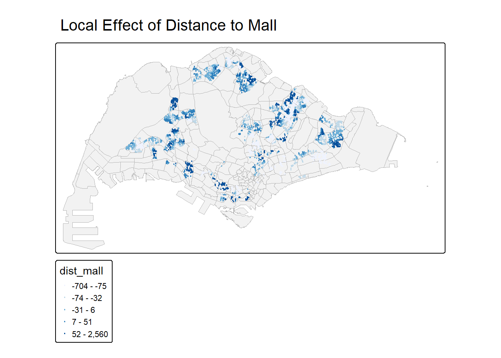
Distance to malls generally has a small negative effect. Stronger negative effects appear in central and mature towns, where residents value retail and lifestyle access. However, several outer regions show near-zero or even mild positive coefficients, suggesting that being too close to malls may introduce traffic or crowding.
tm_shape(mpsz_main) +
tm_polygons(fill = "grey95", col = "grey70", lwd = 0.5) +
tm_shape(resale_4rm_sf) +
tm_dots(
fill = "dist_supermarket",
fill.scale = tm_scale_intervals(
style = "quantile",
n = 5,
values = "Blues"
),
size = 0.1
) +
tm_title("Local Effect of Distance to Supermarket")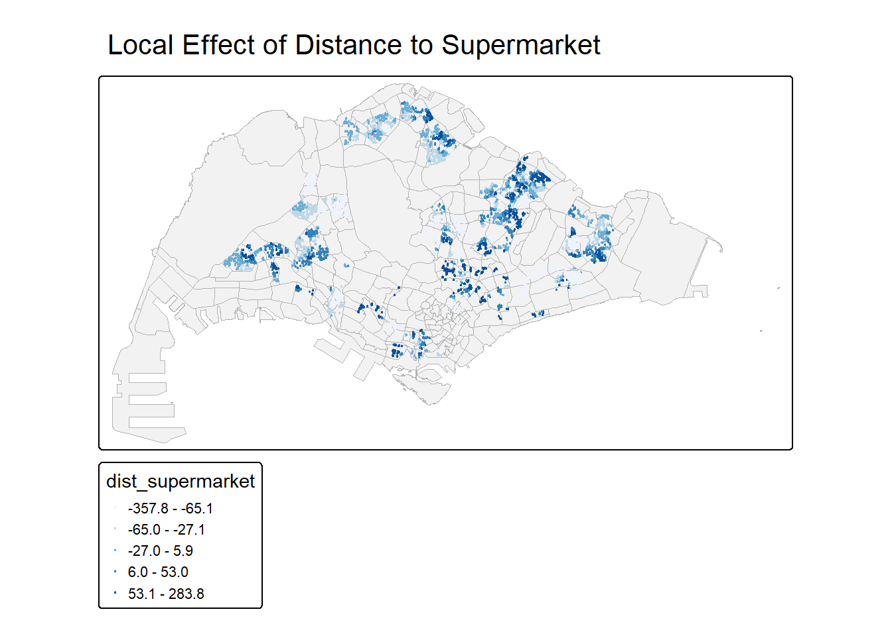
Distance to supermarkets exhibits mostly negative effects, consistent with buyers valuing convenient grocery access. However, spatial variation exists, with certain suburbs showing weaker sensitivity. This may reflect that supermarkets are common and widely distributed across Singapore, reducing the price penalty for being slightly further away in those areas.
tm_shape(mpsz_main) +
tm_polygons(fill = "grey95", col = "grey70", lwd = 0.5) +
tm_shape(resale_4rm_sf) +
tm_dots(
fill = "dist_hawker",
fill.scale = tm_scale_intervals(
style = "quantile",
n = 5,
values = "Blues"
),
size = 0.1
) +
tm_title("Local Effect of Distance to Hawker Centre")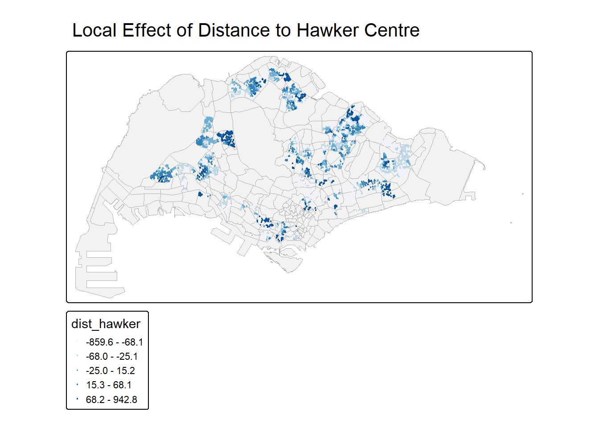
Distance to hawker centres shows clear negative effects in many neighbourhoods. This means homes closer to food options tend to be more desirable. Conversely, in some fringe areas, the effect weakens or reverses, potentially because hawker centres may introduce noise or parking pressures.
tm_shape(mpsz_main) +
tm_polygons(fill = "grey95", col = "grey70", lwd = 0.5) +
tm_shape(resale_4rm_sf) +
tm_dots(
fill = "dist_park",
fill.scale = tm_scale_intervals(
style = "quantile",
n = 5,
values = "Blues"
),
size = 0.1
) +
tm_title("Local Effect of Distance to Park")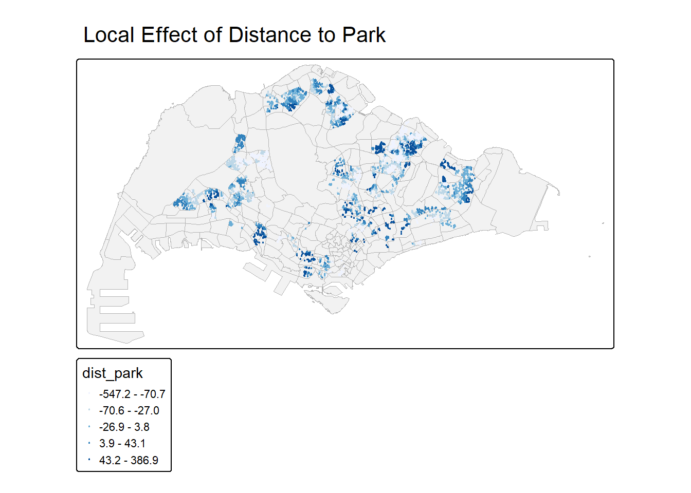
The effect of park distance varies significantly across regions. Some estates see strong negative coefficients, indicating that proximity to parks enhances value due to recreational benefits. Others show weak or mildly positive effects suggesting that greenery benefits are highly location-specific.
tm_shape(mpsz_main) +
tm_polygons(fill = "grey95", col = "grey70", lwd = 0.5) +
tm_shape(resale_4rm_sf) +
tm_dots(
fill = "dist_eldercare",
fill.scale = tm_scale_intervals(
style = "quantile",
n = 5,
values = "Blues"
),
size = 0.1
) +
tm_title("Local Effect of Distance to Eldercare Facilities")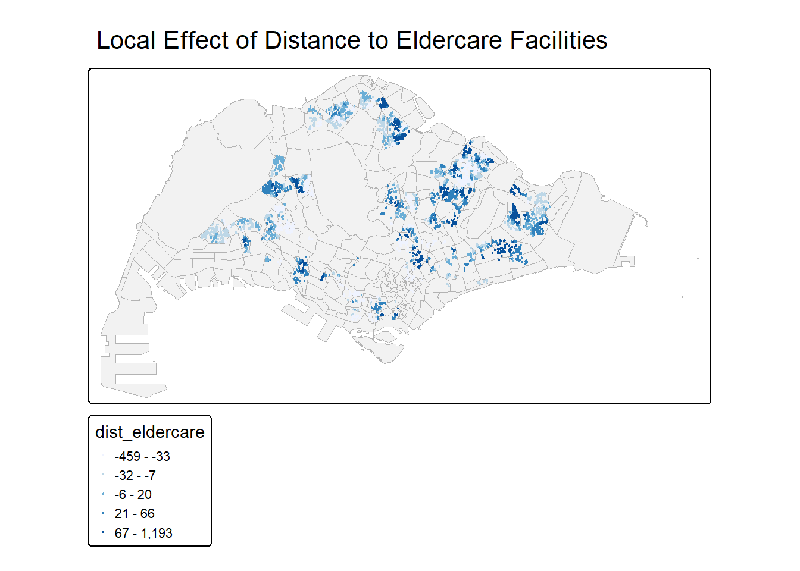
Distance to eldercare facilities also shows a mixed spatial pattern. In some areas, being nearer to eldercare appears beneficial, perhaps reflecting higher demand from multi-generational households. In other neighbourhoods, the effect is negative. This confirms that eldercare amenities influence prices differently across demographic profiles and neighbourhood designs.
tm_shape(mpsz_main) +
tm_polygons(fill = "grey95", col = "grey70", lwd = 0.5) +
tm_shape(resale_4rm_sf) +
tm_dots(
fill = "n_schoolpri_1km",
fill.scale = tm_scale_intervals(
style = "quantile",
n = 5,
values = "YlOrRd"
),
size = 0.1
) +
tm_title("Local Effect of Primary Schools (1km)")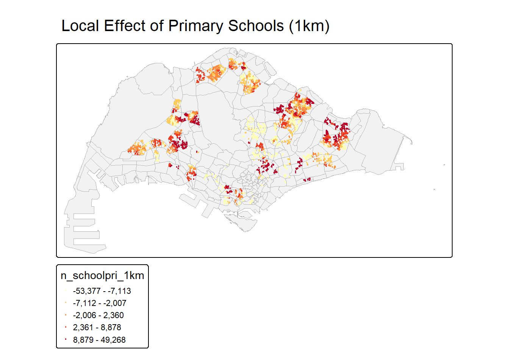
The effect of primary school count varies widely across the island. Some regions show a positive coefficient, where having more schools nearby increases resale value. However, large clusters display negative effects, suggesting that school density can also introduce congestion or competition, lowering perceived amenity value. This spatially mixed pattern illustrates that school accessibility is not universally beneficial and depends on neighbourhood context.
tm_shape(mpsz_main) +
tm_polygons(fill = "grey95", col = "grey70", lwd = 0.5) +
tm_shape(resale_4rm_sf) +
tm_dots(
fill = "n_kinder_350m",
fill.scale = tm_scale_intervals(
style = "quantile",
n = 5,
values = "YlOrRd"
),
size = 0.1
) +
tm_title("Local Effect of Kindergartens (350m)")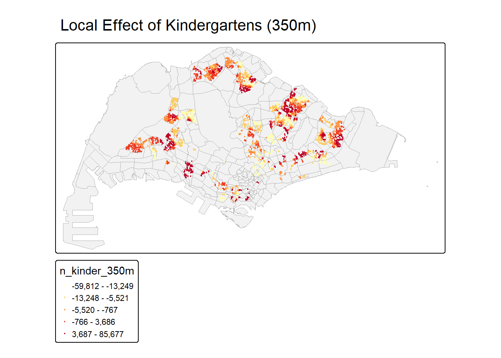
Kindergarten availability shows highly localised effects. Certain central and northeastern estates exhibit strong positive coefficients, indicating that proximity to preschool options boosts housing demand. Conversely, some areas show negative or weak effects, likely the same reason as primary schools
tm_shape(mpsz_main) +
tm_polygons(fill = "grey95", col = "grey70", lwd = 0.5) +
tm_shape(resale_4rm_sf) +
tm_dots(
fill = "n_childcare_350m",
fill.scale = tm_scale_intervals(
style = "quantile",
n = 5,
values = "YlOrRd"
),
size = 0.1
) +
tm_title("Local Effect of Childcare Centres (350m)")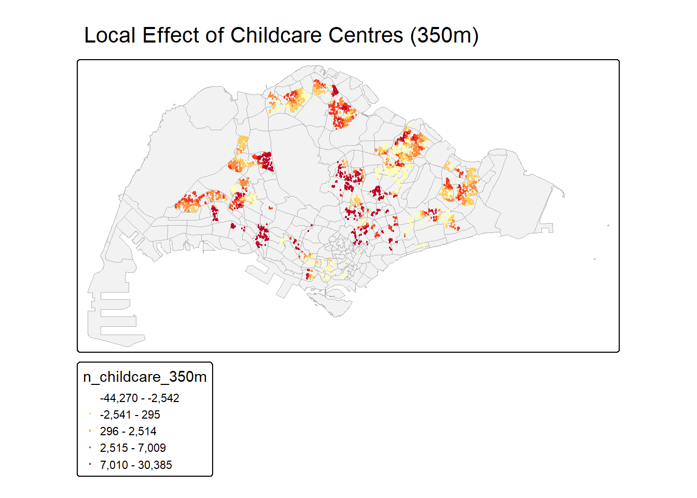
Childcare centres display mixed but generally modest impacts on resale prices. Positive effects appear in estates with a high concentration of young families, suggesting increased convenience value. In other areas, negative effects may indicate saturation or perceived crowding.
tm_shape(mpsz_main) +
tm_polygons(fill = "grey95", col = "grey70", lwd = 0.5) +
tm_shape(resale_4rm_sf) +
tm_dots(
fill = "n_busstop_350m",
fill.scale = tm_scale_intervals(
style = "quantile",
n = 5,
values = "YlOrRd"
),
size = 0.05
) +
tm_title("Local Effect of Bus Stops (350m)")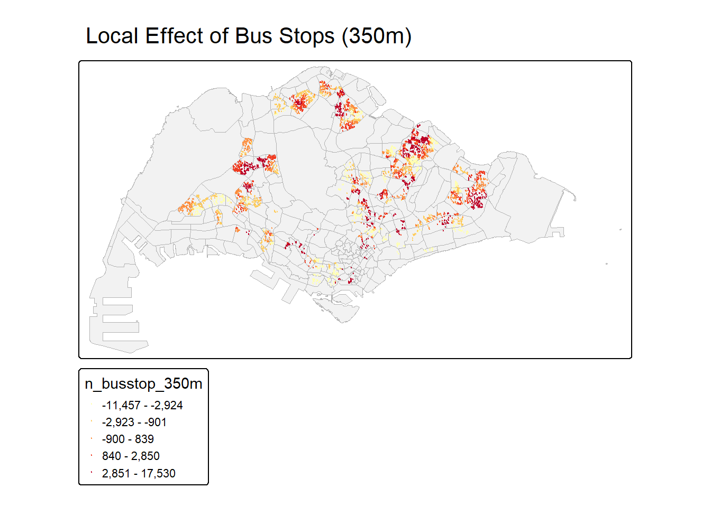
The local effect of bus stop density is mostly negative, though the strength varies. Areas with strong negative coefficients may be experiencing noise, traffic, or bus activity that slightly reduces housing desirability. In contrast, weaker or near-zero effects occur in regions where public transport is expected and normalized.
The GWR results show that the factors affecting 4-room HDB resale prices vary across different parts of Singapore rather than behaving the same everywhere. Structural factors such as floor area and remaining lease have the strongest impact in the central region, where buyers place higher value on larger units and longer leases. Their influence becomes more moderate in the western and northern areas.
Accessibility factors like distance to MRT stations are most important in the eastern and northeastern regions, where rail access plays a larger role in daily travel. Locational amenities such as malls, supermarkets, hawker centres, parks and eldercare facilities also show stronger effects in the eastern, northeastern and western parts of the island, where such amenities are less concentrated. In contrast, the central region sees weaker effects because amenities are already abundant.
Family-related amenities, including schools and childcare centres, matter more in the eastern and northeastern regions, which tend to have younger households. Overall, the results highlight that different regions respond differently to the same housing attributes, and resale prices are shaped by localised preferences rather than a single island-wide pattern.
GWR Residual Map
The residual map provides a spatial view of where the GWR model still under or over predicts resale prices. The code chunk below will be used to plot our residual map.
tm_shape(mpsz_main) +
tm_polygons(
fill = "grey95",
col = "grey70",
lwd = 0.5
) +
tm_shape(resale_4rm_sf) +
tm_dots(
fill = "residual",
fill.scale = tm_scale_intervals(
style = "quantile",
n = 5,
values = "-RdBu"
),
size = 0.08
) +
tm_title("Residuals of GWR Model")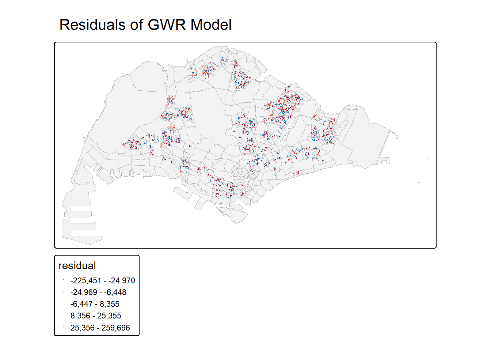
Most areas show small residual values, reflecting that the GWR model explains a large proportion of price variation after accounting for spatially varying relationships. A few clusters of higher positive or negative residuals remain, indicating locations where additional unmeasured factors may influence prices. Overall, the residual pattern is much weaker and more dispersed compared to the OLS residuals, confirming that GWR successfully reduces spatial bias and improves the model fit.
Conclusion
This study examined the spatial drivers of 4-room HDB resale prices using Geographically Weighted Regression (GWR). The results show that housing attributes do not influence prices uniformly across Singapore; instead, their effects vary significantly by location. Structural factors such as floor area and remaining lease have the strongest impact in the central region, where demand pressures are higher. Their influence weakens gradually towards the western and northern areas.
Accessibility and amenity-related variables, including distance to MRT stations, parks, hawker centres and supermarkets, show stronger effects in the eastern, northeastern and western parts of the island, where such amenities are less concentrated. This suggests that buyers in amenity-scarce regions place greater value on proximity to daily conveniences and public transport. Family-oriented amenities like schools and childcare facilities matter more in the eastern and northeastern regions, reflecting younger household profiles in those areas.
Overall, the GWR model captures local variations far better than a global model, revealing clear spatial heterogeneity in housing price determinants. These findings highlight the importance of accounting for neighbourhood-specific dynamics in housing valuation, planning and policy design. Future work may incorporate temporal analysis, additional socio-economic variables, or alternative spatial models to further strengthen the understanding of price behaviour across Singapore.